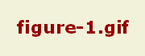
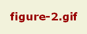

实验
X
编辑代码：
<!DOCTYPE html> <html> <head> <style> div { width:100px; height:100px; background:red; animation:myfirst 5s; -moz-animation:myfirst 5s; /* Firefox */ -webkit-animation:myfirst 5s; /* Safari and Chrome */ -o-animation:myfirst 5s; /* Opera */ } @keyframes myfirst { from {background:red;} to {background:yellow;} } @-moz-keyframes myfirst /* Firefox */ { from {background:red;} to {background:yellow;} } @-webkit-keyframes myfirst /* Safari and Chrome */ { from {background:red;} to {background:yellow;} } @-o-keyframes myfirst /* Opera */ { from {background:red;} to {background:yellow;} } </style> </head> <body> <div></div> </body> </html>
<!DOCTYPE html> <html> <head> <style> div { width:100px; height:100px; background:red; animation:myfirst 5s; -moz-animation:myfirst 5s; /* Firefox */ -webkit-animation:myfirst 5s; /* Safari and Chrome */ -o-animation:myfirst 5s; /* Opera */ } @keyframes myfirst { 0% {background:red;} 25% {background:yellow;} 50% {background:blue;} 100% {background:green;} } @-moz-keyframes myfirst /* Firefox */ { 0% {background:red;} 25% {background:yellow;} 50% {background:blue;} 100% {background:green;} } @-webkit-keyframes myfirst /* Safari and Chrome */ { 0% {background:red;} 25% {background:yellow;} 50% {background:blue;} 100% {background:green;} } @-o-keyframes myfirst /* Opera */ { 0% {background:red;} 25% {background:yellow;} 50% {background:blue;} 100% {background:green;} } </style> </head> <body> <div></div> </body> </html>
<!DOCTYPE html> <html> <head> <style> div { width:100px; height:100px; background:red; position:relative; animation:myfirst 5s; -webkit-animation:myfirst 5s; /* Safari and Chrome */ } @keyframes myfirst { 0% {background:red; left:0px; top:0px;} 25% {background:yellow; left:200px; top:0px;} 50% {background:blue; left:200px; top:200px;} 75% {background:green; left:0px; top:200px;} 100% {background:red; left:0px; top:0px;} } @-webkit-keyframes myfirst /* Safari and Chrome */ { 0% {background:red; left:0px; top:0px;} 25% {background:yellow; left:200px; top:0px;} 50% {background:blue; left:200px; top:200px;} 75% {background:green; left:0px; top:200px;} 100% {background:red; left:0px; top:0px;} } </style> </head> <body> <div></div> </body> </html>
<!DOCTYPE html> <html> <head> <style> div { width:100px; height:100px; background:red; position:relative; animation-name:myfirst; animation-duration:5s; animation-timing-function:linear; animation-delay:2s; animation-iteration-count:infinite; animation-direction:alternate; animation-play-state:running; /* Safari and Chrome: */ -webkit-animation-name:myfirst; -webkit-animation-duration:5s; -webkit-animation-timing-function:linear; -webkit-animation-delay:2s; -webkit-animation-iteration-count:infinite; -webkit-animation-direction:alternate; -webkit-animation-play-state:running; } @keyframes myfirst { 0% {background:red; left:0px; top:0px;} 25% {background:yellow; left:200px; top:0px;} 50% {background:blue; left:200px; top:200px;} 75% {background:green; left:0px; top:200px;} 100% {background:red; left:0px; top:0px;} } @-moz-keyframes myfirst /* Firefox */ { 0% {background:red; left:0px; top:0px;} 25% {background:yellow; left:200px; top:0px;} 50% {background:blue; left:200px; top:200px;} 75% {background:green; left:0px; top:200px;} 100% {background:red; left:0px; top:0px;} } @-webkit-keyframes myfirst /* Safari and Chrome */ { 0% {background:red; left:0px; top:0px;} 25% {background:yellow; left:200px; top:0px;} 50% {background:blue; left:200px; top:200px;} 75% {background:green; left:0px; top:200px;} 100% {background:red; left:0px; top:0px;} } @-o-keyframes myfirst /* Opera */ { 0% {background:red; left:0px; top:0px;} 25% {background:yellow; left:200px; top:0px;} 50% {background:blue; left:200px; top:200px;} 75% {background:green; left:0px; top:200px;} 100% {background:red; left:0px; top:0px;} } </style> </head> <body> <div></div> </body> </html>
<!DOCTYPE html> <html> <head> <style> div { width:100px; height:100px; background:red; position:relative; animation:myfirst 5s linear 2s infinite alternate; /* Safari and Chrome: */ -webkit-animation:myfirst 5s linear 2s infinite alternate; } @keyframes myfirst { 0% {background:red; left:0px; top:0px;} 25% {background:yellow; left:200px; top:0px;} 50% {background:blue; left:200px; top:200px;} 75% {background:green; left:0px; top:200px;} 100% {background:red; left:0px; top:0px;} } @-webkit-keyframes myfirst /* Safari and Chrome */ { 0% {background:red; left:0px; top:0px;} 25% {background:yellow; left:200px; top:0px;} 50% {background:blue; left:200px; top:200px;} 75% {background:green; left:0px; top:200px;} 100% {background:red; left:0px; top:0px;} } } </style> </head> <body> <div></div> </body> </html>
<!DOCTYPE html> <html> <head> <style> div { border:1px solid black; padding:35px; background-image:url('/i/bg_flower.gif'); background-repeat:no-repeat; background-position:left; } #div1 { background-origin:border-box; } #div2 { background-origin:content-box; } </style> </head> <body> <p>background-origin:border-box:</p> <div id="div1"> 这是文本。这是文本。这是文本。这是文本。这是文本。这是文本。这是文本。这是文本。这是文本。这是文本。这是文本。这是文本。这是文本。这是文本。这是文本。这是文本。这是文本。这是文本。这是文本。这是文本。这是文本。这是文本。这是文本。这是文本。这是文本。这是文本。这是文本。这是文本。这是文本。这是文本。这是文本。这是文本。这是文本。这是文本。这是文本。这是文本。 </div> <p>background-origin:content-box:</p> <div id="div2"> 这是文本。这是文本。这是文本。这是文本。这是文本。这是文本。这是文本。这是文本。这是文本。这是文本。这是文本。这是文本。这是文本。这是文本。这是文本。这是文本。这是文本。这是文本。这是文本。这是文本。这是文本。这是文本。这是文本。这是文本。这是文本。这是文本。这是文本。这是文本。这是文本。这是文本。这是文本。这是文本。这是文本。这是文本。这是文本。这是文本。 </div> </body> </html>
<!DOCTYPE html> <html> <head> <style> body { background:url(../i/bg_flower.gif); background-size:63px 100px; background-repeat:no-repeat; padding-top:80px; } </style> </head> <body> <p>上面是缩小的背景图片。</p> <p>原始图片：<img src="../i/bg_flower.gif" alt="Flowers"></p> </body> </html>
<!DOCTYPE html> <html> <head> <style> div { background:url(../i/bg_flower.gif); background-size:35% 100%; background-repeat:no-repeat; } </style> </head> <body> <div> <p>这是一个段落。</p> <p>这是一个段落。</p> <p>这是一个段落。</p> <p>这是一个段落。</p> <p>这是一个段落。</p> <p>这是一个段落。</p> <p>这是一个段落。</p> <p>这是一个段落。</p> <p>这是一个段落。</p> </div> </body> </html>
<!DOCTYPE html> <html> <head> <style> body { background-image:url(../i/bg_flower.gif),url(../i/bg_flower_2.gif); } </style> </head> <body> </body> </html>
<!DOCTYPE html> <html> <head> <style> div { border:15px solid transparent; width:300px; padding:10px 20px; } #round { border-image:url(../i/border.png) 30 30 round; } #stretch { -moz-border-image:url(../i/border.png) 30 30 stretch; /* Old Firefox */ -webkit-border-image:url(../i/border.png) 30 30 stretch; /* Safari and Chrome */ -o-border-image:url(../i/border.png) 30 30 stretch; /* Opera */ border-image:url(../i/border.png) 30 30 stretch; } </style> </head> <body> <div id="round">在这里，图片铺满整个边框。</div> <br> <div id="stretch">在这里，图片被拉伸以填充该区域。</div> <p>这是我们使用的图片：</p> <img src="../i/border.png" > <p>border-image 属性规定了用作边框的图片。</p> </body> </html>
<!DOCTYPE html> <html> <head> <style> div { text-align:center; border:2px solid #a1a1a1; padding:10px 40px; background:#dddddd; width:350px; border-radius:25px; } </style> </head> <body> <div>border-radius 属性允许您向元素添加圆角。</div> </body> </html>
<!DOCTYPE html> <html> <head> <style> div.container { width:30em; border:1em solid; } div.box { box-sizing:border-box; -moz-box-sizing:border-box; /* Firefox */ -webkit-box-sizing:border-box; /* Safari */ width:50%; border:1em solid red; float:left; } </style> </head> <body> <div class="container"> <div class="box">这个 div 占据左半部分。</div> <div class="box">这个 div 占据右半部分。</div> </div> </body> </html>
<!DOCTYPE html> <html> <head> <style type="text/css"> p { background-color:#0000ff; } </style> </head> <body> <h1>这是标题 1</h1> <p>这是段落中的一些文本。</p> </body> </html>
<!DOCTYPE html> <html> <head> <style type="text/css"> p { background-color:hsl(120,65%,75%); } </style> </head> <body> <h1>这是标题 1</h1> <p>这是段落中的一些文本。</p> </body> </html>
<!DOCTYPE html> <html> <head> <style type="text/css"> p { background-color:hsla(120,65%,75%,0.3); } </style> </head> <body> <h1>这是标题 1</h1> <p>这是段落中的一些文本。</p> </body> </html>
<!DOCTYPE html> <html> <head> <style type="text/css"> p { background-color:rgb(255,0,0); } </style> </head> <body> <h1>这是标题 1</h1> <p>这是段落中的一些文本。</p> </body> </html>
<!DOCTYPE html> <html> <head> <style type="text/css"> p { background-color:rgba(255,0,0,0.3); } </style> </head> <body> <h1>这是标题 1</h1> <p>这是段落中的一些文本。</p> </body> </html>
<!DOCTYPE html> <html> <head> <style> .newspaper { -moz-column-count:3; /* Firefox */ -webkit-column-count:3; /* Safari and Chrome */ column-count:3; } </style> </head> <body> <div class="newspaper"> 人民网北京2月24日电 (记者 刘阳)国家发展改革委近日发出通知，决定自2月25日零时起将汽、柴油价格每吨分别提高300元和290元，折算到90号汽油和0号柴油（全国平均）每升零售价格分别提高0.22元和0.25元。 此次国内成品油价格调整幅度，是按照现行国内成品油价格形成机制，根据国际市场油价变化情况确定的。去年11月16日国内成品油价格调整以来，受市场预期欧美经济复苏前景向好以及中东局势持续动荡等因素影响，国际市场原油价格先抑后扬，2月上旬WTI和布伦特原油期货价格再次回升至每桶95美元和115美元以上。虽然近两日价格有所回落，但国内油价挂钩的国际市场三种原油连续22个工作日移动平均价格上涨幅度已超过4%，达到国内成品油价格调整的边界条件。 通知指出，这次成品油调价后，国家将按照已建立的补贴机制，继续对种粮农民、渔业（含远洋渔业）、林业、城市公交、农村道路客运（含岛际和农村水路客运）等给予补贴。同时，为保证市场物价基本稳定，防止连锁涨价，对与居民生活密切相关的铁路客运、城市公交、农村道路客运（含岛际和农村水路客运）价格不作调整。 通知要求，中石油、中石化、中海油三大公司要组织好成品油生产和调运，保持合理库存，加强综合协调和应急调度，保障成品油供应。各级价格主管部门要加大市场监督检查力度，依法查处不执行国家价格政策，以及囤积居奇、造谣惑众、合谋涨价、搭车涨价等违法行为，维护正常市场秩序。 </div> </body> </html>
<!DOCTYPE html> <html> <head> <style> .newspaper { -moz-column-count:3; /* Firefox */ -webkit-column-count:3; /* Safari and Chrome */ column-count:3; -moz-column-gap:40px; /* Firefox */ -webkit-column-gap:40px; /* Safari and Chrome */ column-gap:40px; } </style> </head> <body> <div class="newspaper"> 人民网北京2月24日电 (记者 刘阳)国家发展改革委近日发出通知，决定自2月25日零时起将汽、柴油价格每吨分别提高300元和290元，折算到90号汽油和0号柴油（全国平均）每升零售价格分别提高0.22元和0.25元。 此次国内成品油价格调整幅度，是按照现行国内成品油价格形成机制，根据国际市场油价变化情况确定的。去年11月16日国内成品油价格调整以来，受市场预期欧美经济复苏前景向好以及中东局势持续动荡等因素影响，国际市场原油价格先抑后扬，2月上旬WTI和布伦特原油期货价格再次回升至每桶95美元和115美元以上。虽然近两日价格有所回落，但国内油价挂钩的国际市场三种原油连续22个工作日移动平均价格上涨幅度已超过4%，达到国内成品油价格调整的边界条件。 通知指出，这次成品油调价后，国家将按照已建立的补贴机制，继续对种粮农民、渔业（含远洋渔业）、林业、城市公交、农村道路客运（含岛际和农村水路客运）等给予补贴。同时，为保证市场物价基本稳定，防止连锁涨价，对与居民生活密切相关的铁路客运、城市公交、农村道路客运（含岛际和农村水路客运）价格不作调整。 通知要求，中石油、中石化、中海油三大公司要组织好成品油生产和调运，保持合理库存，加强综合协调和应急调度，保障成品油供应。各级价格主管部门要加大市场监督检查力度，依法查处不执行国家价格政策，以及囤积居奇、造谣惑众、合谋涨价、搭车涨价等违法行为，维护正常市场秩序。 </div> </body> </html>
<!DOCTYPE html> <html> <head> <style> .newspaper { -moz-column-count:3; /* Firefox */ -webkit-column-count:3; /* Safari and Chrome */ column-count:3; -moz-column-gap:40px; /* Firefox */ -webkit-column-gap:40px; /* Safari and Chrome */ column-gap:40px; -moz-column-rule:4px outset #ff0000; /* Firefox */ -webkit-column-rule:4px outset #ff0000; /* Safari and Chrome */ column-rule:4px outset #ff0000; } </style> </head> <body> <div class="newspaper"> 人民网北京2月24日电 (记者 刘阳)国家发展改革委近日发出通知，决定自2月25日零时起将汽、柴油价格每吨分别提高300元和290元，折算到90号汽油和0号柴油（全国平均）每升零售价格分别提高0.22元和0.25元。 此次国内成品油价格调整幅度，是按照现行国内成品油价格形成机制，根据国际市场油价变化情况确定的。去年11月16日国内成品油价格调整以来，受市场预期欧美经济复苏前景向好以及中东局势持续动荡等因素影响，国际市场原油价格先抑后扬，2月上旬WTI和布伦特原油期货价格再次回升至每桶95美元和115美元以上。虽然近两日价格有所回落，但国内油价挂钩的国际市场三种原油连续22个工作日移动平均价格上涨幅度已超过4%，达到国内成品油价格调整的边界条件。 通知指出，这次成品油调价后，国家将按照已建立的补贴机制，继续对种粮农民、渔业（含远洋渔业）、林业、城市公交、农村道路客运（含岛际和农村水路客运）等给予补贴。同时，为保证市场物价基本稳定，防止连锁涨价，对与居民生活密切相关的铁路客运、城市公交、农村道路客运（含岛际和农村水路客运）价格不作调整。 通知要求，中石油、中石化、中海油三大公司要组织好成品油生产和调运，保持合理库存，加强综合协调和应急调度，保障成品油供应。各级价格主管部门要加大市场监督检查力度，依法查处不执行国家价格政策，以及囤积居奇、造谣惑众、合谋涨价、搭车涨价等违法行为，维护正常市场秩序。 </div> </body> </html>
<!DOCTYPE html> <html> <head> <style> @font-face { font-family: myFirstFont; src: url('/example/css3/Sansation_Light.ttf') ,url('/example/css3/Sansation_Light.eot'); /* IE9+ */ } div { font-family:myFirstFont; } </style> </head> <body> <div> With CSS3, websites can finally use fonts other than the pre-selected "web-safe" fonts. </div> </body> </html>
<!DOCTYPE html> <html> <head> <style> @font-face { font-family: myFirstFont; src: url('/example/css3/Sansation_Light.ttf') ,url('/example/css3/Sansation_Light.eot'); /* IE9+ */ } @font-face { font-family: myFirstFont; src: url('/example/css3/Sansation_Bold.ttf') ,url('/example/css3/Sansation_Bold.eot'); /* IE9+ */ font-weight:bold; } div { font-family:myFirstFont; } </style> </head> <body> <div> With CSS3, websites can <b>finally</b> use fonts other than the pre-selected "web-safe" fonts. </div> </body> </html>
<!DOCTYPE html> <html> <head> <style> div { margin:20px; width:150px; padding:10px; height:70px; border:2px solid black; outline:2px solid red; outline-offset:15px; } </style> </head> <body> <div>这个 div 在边框边缘之外 15 像素处有一个轮廓。</div> </body> </html>
<!DOCTYPE html> <html> <head> <style> div { border:2px solid; padding:10px 40px; width:300px; resize:both; overflow:auto; } </style> </head> <body> <div>resize 属性规定是否可由用户调整元素尺寸。</div> </body> </html>
<!DOCTYPE html> <html> <head> <style> h1 { text-shadow: 5px 5px 5px #FF0000; } </style> </head> <body> <h1>文本阴影效果！</h1> </body> </html>
<!DOCTYPE html> <html> <head> <style> div { margin:30px; width:200px; height:100px; background-color:yellow; /* Rotate div */ transform:rotate(9deg); } </style> </head> <body> <div>Hello World</div> </body> </html>
<!DOCTYPE html> <html> <head> <style> div { width:100px; height:75px; background-color:yellow; border:1px solid black; } div#div2 { transform:matrix(0.866,0.5,-0.5,0.866,0,0); -ms-transform:matrix(0.866,0.5,-0.5,0.866,0,0); /* IE 9 */ -moz-transform:matrix(0.866,0.5,-0.5,0.866,0,0); /* Firefox */ -webkit-transform:matrix(0.866,0.5,-0.5,0.866,0,0); /* Safari and Chrome */ -o-transform:matrix(0.866,0.5,-0.5,0.866,0,0); /* Opera */ } </style> </head> <body> <div>你好。这是一个 div 元素。</div> </body> </html>
<!DOCTYPE html> <html> <head> <style> div { width:100px; height:75px; background-color:yellow; border:1px solid black; } div#div2 { transform:rotate(30deg); -ms-transform:rotate(30deg); /* IE 9 */ -moz-transform:rotate(30deg); /* Firefox */ -webkit-transform:rotate(30deg); /* Safari and Chrome */ -o-transform:rotate(30deg); /* Opera */ } </style> </head> <body> <div>你好。这是一个 div 元素。</div> </body> </html>
<!DOCTYPE html> <html> <head> <style> div { width:100px; height:75px; background-color:yellow; border:1px solid black; } div#div2 { transform:rotateX(120deg); -webkit-transform:rotateX(120deg); /* Safari and Chrome */ -moz-transform:rotateX(120deg); /* Firefox */ } </style> </head> <body> <div>你好。这是一个 div 元素。</div> </body> </html>
<!DOCTYPE html> <html> <head> <style> div { width:100px; height:75px; background-color:yellow; border:1px solid black; } div#div2 { transform:rotateY(130deg); -webkit-transform:rotateY(130deg); /* Safari and Chrome */ -moz-transform:rotateY(130deg); /* Firefox */ } </style> </head> <body> <div>你好。这是一个 div 元素。</div> </body> </html>
<!DOCTYPE html> <html> <head> <style> div { width:100px; height:75px; background-color:yellow; border:1px solid black; } div#div2 { margin:100px; transform:scale(2,4); -ms-transform:scale(2,4); /* IE 9 */ -moz-transform:scale(2,4); /* Firefox */ -webkit-transform:scale(2,4); /* Safari and Chrome */ -o-transform:scale(2,4); /* Opera */ } </style> </head> <body> <div>你好。这是一个 div 元素。</div> </body> </html>
<!DOCTYPE html> <html> <head> <style> div { width:100px; height:75px; background-color:yellow; border:1px solid black; } div#div2 { transform:skew(30deg,20deg); -ms-transform:skew(30deg,20deg); /* IE 9 */ -moz-transform:skew(30deg,20deg); /* Firefox */ -webkit-transform:skew(30deg,20deg); /* Safari and Chrome */ -o-transform:skew(30deg,20deg); /* Opera */ } </style> </head> <body> <div>你好。这是一个 div 元素。</div> </body> </html>
<!DOCTYPE html> <html> <head> <style> div { width:100px; height:75px; background-color:yellow; border:1px solid black; } div#div2 { transform:translate(50px,100px); -ms-transform:translate(50px,100px); /* IE 9 */ -moz-transform:translate(50px,100px); /* Firefox */ -webkit-transform:translate(50px,100px); /* Safari and Chrome */ -o-transform:translate(50px,100px); /* Opera */ } </style> </head> <body> <div>你好。这是一个 div 元素。</div> </body> </html>
<!DOCTYPE html> <html> <head> <style> div { width:100px; height:100px; background:yellow; transition:width 2s; -moz-transition:width 2s; /* Firefox 4 */ -webkit-transition:width 2s; /* Safari and Chrome */ -o-transition:width 2s; /* Opera */ } div:hover { width:300px; } </style> </head> <body> <div></div> </body> </html>
<!DOCTYPE html> <html> <head> <style> div { width:100px; height:100px; background:yellow; transition:width 2s, height 2s; -moz-transition:width 2s, height 2s, -moz-transform 2s; /* Firefox 4 */ -webkit-transition:width 2s, height 2s, -webkit-transform 2s; /* Safari and Chrome */ -o-transition:width 2s, height 2s, -o-transform 2s; /* Opera */ } div:hover { width:200px; height:200px; transform:rotate(180deg); -moz-transform:rotate(180deg); /* Firefox 4 */ -webkit-transform:rotate(180deg); /* Safari and Chrome */ -o-transform:rotate(180deg); /* Opera */ } </style> </head> <body> <div>请把鼠标指针放到黄色的 div 元素上，来查看过渡效果。</div> </body> </html>
<!DOCTYPE html> <html> <head> <style> div { width:100px; height:100px; background:yellow; transition-property:width; transition-duration:1s; transition-timing-function:linear; transition-delay:2s; /* Firefox 4 */ -moz-transition-property:width; -moz-transition-duration:1s; -moz-transition-timing-function:linear; -moz-transition-delay:2s; /* Safari and Chrome */ -webkit-transition-property:width; -webkit-transition-duration:1s; -webkit-transition-timing-function:linear; -webkit-transition-delay:2s; /* Opera */ -o-transition-property:width; -o-transition-duration:1s; -o-transition-timing-function:linear; -o-transition-delay:2s; } div:hover { width:200px; } </style> </head> <body> <div></div> </body> </html>
<!DOCTYPE html> <html> <head> <style> div { width:100px; height:100px; background:yellow; transition-property:width 1s linear 2s; /* Firefox 4 */ -moz-transition:width 1s linear 2s; /* Safari and Chrome */ -webkit-transition:width 1s linear 2s; /* Opera */ -o-transition:width 1s linear 2s; } div:hover { width:200px; } </style> </head> <body> <div></div> </body> </html>
<!DOCTYPE html> <html> <head> <style> p.test { width:11em; border:1px solid #000000; word-wrap:break-word; } </style> </head> <body> <p class="test">This paragraph contains a very long word: thisisaveryveryveryveryveryverylongword. The long word will break and wrap to the next line.</p> </body> </html>
<html> <head> <style type="text/css"> h1:after {content:url(../i/w3school_logo_white.gif)} </style> </head> <body> <h1>This is a heading</h1> <p>The :before pseudo-element inserts content before an element.</p> <h1>This is a heading</h1> </body> </html>
<html> <head> <style type="text/css"> body { background-image:url(../i/eg_bg_02.gif); background-repeat:no-repeat; background-attachment:fixed } </style> </head> <body> <p>图像不会随页面的其余部分滚动。</p> <p>图像不会随页面的其余部分滚动。</p> <p>图像不会随页面的其余部分滚动。</p> <p>图像不会随页面的其余部分滚动。</p> <p>图像不会随页面的其余部分滚动。</p> <p>图像不会随页面的其余部分滚动。</p> <p>图像不会随页面的其余部分滚动。</p> <p>图像不会随页面的其余部分滚动。</p> <p>图像不会随页面的其余部分滚动。</p> <p>图像不会随页面的其余部分滚动。</p> <p>图像不会随页面的其余部分滚动。</p> <p>图像不会随页面的其余部分滚动。</p> <p>图像不会随页面的其余部分滚动。</p> <p>图像不会随页面的其余部分滚动。</p> <p>图像不会随页面的其余部分滚动。</p> <p>图像不会随页面的其余部分滚动。</p> <p>图像不会随页面的其余部分滚动。</p> <p>图像不会随页面的其余部分滚动。</p> <p>图像不会随页面的其余部分滚动。</p> <p>图像不会随页面的其余部分滚动。</p> <p>图像不会随页面的其余部分滚动。</p> <p>图像不会随页面的其余部分滚动。</p> <p>图像不会随页面的其余部分滚动。</p> <p>图像不会随页面的其余部分滚动。</p> </body> </html>
<html> <head> <style type="text/css"> body {background-color: yellow} h1 {background-color: #00ff00} h2 {background-color: transparent} p {background-color: rgb(250,0,255)} p.no2 {background-color: gray; padding: 20px;} </style> </head> <body> <h1>这是标题 1</h1> <h2>这是标题 2</h2> <p>这是段落</p> <p class="no2">这个段落设置了内边距。</p> </body> </html>
<html> <head> <style type="text/css"> body {background-image:url(../i/eg_bg_04.gif);} </style> </head> <body></body> </html>
<html> <head> <style type="text/css"> body {background-image:url(../i/eg_bg_04.gif);} p.flower {background-image: url(../i/eg_bg_03.gif); padding: 20px;} a.radio {background-image: url(../i/eg_bg_07.gif); padding: 20px;} </style> </head> <body> <p class="flower">我是一个有花纹背景的段落。<a href="#" class="radio">我是一个有放射性背景的链接。</a></p> <p><b>注释：</b>为了清晰地显示出段落和链接的背景图像，我们为它们设置了少许内边距。</p> </body> </html>
<html> <head> <style type="text/css"> body { background-image:url('/i/eg_bg_03.gif'); background-repeat:no-repeat; background-attachment:fixed; background-position:center; } </style> </head> <body> <body> <p><b>提示：</b>您需要把 background-attachment 属性设置为 "fixed"，才能保证该属性在 Firefox 和 Opera 中正常工作。</p> </body> </body> </html>
<html> <head> <style type="text/css"> body { background-image: url('/i/eg_bg_03.gif'); background-repeat: no-repeat; background-attachment:fixed; background-position: 30% 20%; } </style> </head> <body> <p><b>注释：</b>为了在 Mozilla 中实现此效果，background-attachment 属性必须设置为 "fixed"。</p> </body> </html>
<html> <head> <style type="text/css"> body { background-image: url('/i/eg_bg_03.gif'); background-repeat: no-repeat; background-attachment:fixed; background-position: 50px 100px; } </style> </head> <body> <p><b>注释：</b>为了在 Mozilla 中实现此效果，background-attachment 属性必须设置为 "fixed"。</p> </body> </html>
<html> <head> <style type="text/css"> body { background-image: url(../i/eg_bg_03.gif); background-repeat: repeat } </style> </head> <body> </body> </html>
<html> <head> <style type="text/css"> body { background-image: url(../i/eg_bg_03.gif); background-repeat: repeat-x } </style> </head> <body> </body> </html>
<html> <head> <style type="text/css"> body { background-image: url(../i/eg_bg_03.gif); background-repeat: repeat-y } </style> </head> <body> </body> </html>
<html> <head> <style type="text/css"> body { background-image: url('/i/eg_bg_03.gif'); background-repeat: no-repeat } </style> </head> <body> </body> </html>
<html> <head> <style type="text/css"> body { background: #ff0000 url(../i/eg_bg_03.gif) no-repeat fixed center; } </style> </head> <body> <p>这是一些文本。</p> <p>这是一些文本。</p> <p>这是一些文本。</p> <p>这是一些文本。</p> <p>这是一些文本。</p> <p>这是一些文本。</p> <p>这是一些文本。</p> <p>这是一些文本。</p> <p>这是一些文本。</p> <p>这是一些文本。</p> <p>这是一些文本。</p> <p>这是一些文本。</p> <p>这是一些文本。</p> <p>这是一些文本。</p> <p>这是一些文本。</p> <p>这是一些文本。</p> <p>这是一些文本。</p> <p>这是一些文本。</p> <p>这是一些文本。</p> <p>这是一些文本。</p> <p>这是一些文本。</p> <p>这是一些文本。</p> <p>这是一些文本。</p> <p>这是一些文本。</p> </body> </html>
<html> <head> <style type="text/css"> h1:before {content:url(../i/w3school_logo_white.gif)} </style> </head> <body> <h1>This is a heading</h1> <p>The :before pseudo-element inserts content before an element.</p> <h1>This is a heading</h1> </body> </html>
<html> <head> <style type="text/css"> h1 {behavior:url("/example/csse/behave.htc")} </style> </head> <body> <h1>Mouse over me!!!</h1> </body> </html>
<html> <head> <style type="text/css"> #typing { behavior:url("/example/csse/behave_typing.htc"); font-family:'courier new'; } </style> </head> <body> <span id="typing" speed="100">IE5 introduced DHTML behaviors. Behaviors are a way to add DHTML functionality to HTML elements with the ease of CSS.<br /><br /> How does behaviors work?<br />By using XML we can link behaviors to any element in a web page and manipulate that element.</p> </span> </body> </html>
<html> <head> <style type="text/css"> p { border-style:solid; border-bottom-color:#ff0000; } </style> </head> <body> <p>This is some text in a paragraph.</p> </body> </html>
<html> <head> <style type="text/css"> p {border-style:solid} p.none {border-bottom-style:none} p.dotted {border-bottom-style:dotted} p.dashed {border-bottom-style:dashed} p.solid {border-bottom-style:solid} p.double {border-bottom-style:double} p.groove {border-bottom-style:groove} p.ridge {border-bottom-style:ridge} p.inset {border-bottom-style:inset} p.outset {border-bottom-style:outset} </style> </head> <body> <p class="none">No bottom border.</p> <p class="dotted">A dotted bottom border.</p> <p class="dashed">A dashed bottom border.</p> <p class="solid">A solid bottom border.</p> <p class="double">A double bottom border.</p> <p class="groove">A groove bottom border.</p> <p class="ridge">A ridge bottom border.</p> <p class="inset">An inset bottom border.</p> <p class="outset">An outset bottom border.</p> </body> </html>
<html> <head> <style type="text/css"> p.one { border-style: solid; border-bottom-width: 15px } p.two { border-style: solid; border-bottom-width: thin } </style> </head> <body> <p class="one"><b>注释：</b>"border-bottom-width" 属性如果单独使用的话是不会起作用的。请首先使用 "border-style" 属性来设置边框。</p> <p class="two">Some text. Some more text.</p> </body> </html>
<html> <head> <style type="text/css"> p { border-style:solid; border-bottom:thick dotted #ff0000; } </style> </head> <body> <p>This is some text in a paragraph.</p> </body> </html>
<html> <head> <style type="text/css"> p.one { border-style: solid; border-color: #0000ff } p.two { border-style: solid; border-color: #ff0000 #0000ff } p.three { border-style: solid; border-color: #ff0000 #00ff00 #0000ff } p.four { border-style: solid; border-color: #ff0000 #00ff00 #0000ff rgb(250,0,255) } </style> </head> <body> <p class="one">One-colored border!</p> <p class="two">Two-colored border!</p> <p class="three">Three-colored border!</p> <p class="four">Four-colored border!</p> <p><b>注释：</b>"border-width" 属性如果单独使用的话是不会起作用的。请首先使用 "border-style" 属性来设置边框。</p> </body> </html>
<html> <head> <style type="text/css"> p { border-style: solid; border-left-color: #ff0000 } </style> </head> <body> <p>Some text.</p> </body> </html>
<html> <head> <style type="text/css"> p { border-style:solid; } p.none {border-left-style:none} p.dotted {border-left-style:dotted} p.dashed {border-left-style:dashed} p.solid {border-left-style:solid} p.double {border-left-style:double} p.groove {border-left-style:groove} p.ridge {border-left-style:ridge} p.inset {border-left-style:inset} p.outset {border-left-style:outset} </style> </head> <body> <p class="none">No left border.</p> <p class="dotted">A dotted left border.</p> <p class="dashed">A dashed left border.</p> <p class="solid">A solid left border.</p> <p class="double">A double left border.</p> <p class="groove">A groove left border.</p> <p class="ridge">A ridge left border.</p> <p class="inset">An inset left border.</p> <p class="outset">An outset left border.</p> </body> </html>
<html> <head> <style type="text/css"> p.one { border-style: solid; border-left-width: 15px } p.two { border-style: solid; border-left-width: thin } </style> </head> <body> <p class="one"><b>注释：</b>"border-left-width" 属性如果单独使用的话是不会起作用的。请首先使用 "border-style" 属性来设置边框。</p> <p class="two">Some text. Some more text.</p> </body> </html>
<html> <head> <style type="text/css"> p { border-style:solid; border-left:thick double #ff0000; } </style> </head> <body> <p>This is some text in a paragraph.</p> </body> </html>
<html> <head> <style type="text/css"> p { border-style: solid; border-right-color: #ff0000 } </style> </head> <body> <p>Some text.</p> </body> </html>
<html> <head> <style type="text/css"> p.dotted {border-right-style: dotted} p.dashed {border-right-style: dashed} p.solid {border-right-style: solid} p.double {border-right-style: double} p.groove {border-right-style: groove} p.ridge {border-right-style: ridge} p.inset {border-right-style: inset} p.outset {border-right-style: outset} </style> </head> <body> <p class="dotted">A dotted border</p> <p class="dashed">A dashed border</p> <p class="solid">A solid border</p> <p class="double">A double border</p> <p class="groove">A groove border</p> <p class="ridge">A ridge border</p> <p class="inset">An inset border</p> <p class="outset">An outset border</p> </body> </html>
<html> <head> <style type="text/css"> p.one { border-style: solid; border-right-width: 15px } p.two { border-style: solid; border-right-width: thin } </style> </head> <body> <p class="one"><b>注释：</b>"border-right-width" 属性如果单独使用的话是不会起作用的。请首先使用 "border-style" 属性来设置边框。</p> <p class="two">Some text. Some more text.</p> </body> </html>
<html> <head> <style type="text/css"> p { border-style:solid; border-right:thick double #ff0000; } </style> </head> <body> <p>This is some text in a paragraph.</p> </body> </html>
<html> <head> <style type="text/css"> p.dotted {border-style: dotted} p.dashed {border-style: dashed} p.solid {border-style: solid} p.double {border-style: double} p.groove {border-style: groove} p.ridge {border-style: ridge} p.inset {border-style: inset} p.outset {border-style: outset} </style> </head> <body> <p class="dotted">A dotted border</p> <p class="dashed">A dashed border</p> <p class="solid">A solid border</p> <p class="double">A double border</p> <p class="groove">A groove border</p> <p class="ridge">A ridge border</p> <p class="inset">An inset border</p> <p class="outset">An outset border</p> </body> </html>
<html> <head> <style type="text/css"> p.soliddouble {border-style: solid double} p.doublesolid {border-style: double solid} p.groovedouble {border-style: groove double} p.three {border-style: solid double groove} </style> </head> <body> <p class="soliddouble">Some text</p> <p class="doublesolid">Some text</p> <p class="groovedouble">Some text</p> <p class="three">Some text</p> </body> </html>
<html> <head> <style type="text/css"> p { border-style: solid; border-top-color: #ff0000 } </style> </head> <body> <p>Some text.</p> </body> </html>
<html> <head> <style type="text/css"> p { border-style:solid; } p.none {border-top-style:none} p.dotted {border-top-style:dotted} p.dashed {border-top-style:dashed} p.solid {border-top-style:solid} p.double {border-top-style:double} p.groove {border-top-style:groove} p.ridge {border-top-style:ridge} p.inset {border-top-style:inset} p.outset {border-top-style:outset} </style> </head> <body> <p class="none">No top border.</p> <p class="dotted">A dotted top border.</p> <p class="dashed">A dashed top border.</p> <p class="solid">A solid top border.</p> <p class="double">A double top border.</p> <p class="groove">A groove top border.</p> <p class="ridge">A ridge top border.</p> <p class="inset">An inset top border.</p> <p class="outset">An outset top border.</p> </body> </html>
<html> <head> <style type="text/css"> p.one { border-style: solid; border-top-width: 15px } p.two { border-style: solid; border-top-width: thin } </style> </head> <body> <p class="one"><b>注释：</b>"border-top-width" 属性如果单独使用的话是不会起作用的。请首先使用 "border-style" 属性来设置边框。</p> <p class="two">Some text. Some more text.</p> </body> </html>
<html> <head> <style type="text/css"> p { border-style:solid; border-top:thick double #ff0000; } </style> </head> <body> <p>This is some text in a paragraph.</p> </body> </html>
<html> <head> <style type="text/css"> p.one { border-style: solid; border-width: 5px } p.two { border-style: solid; border-width: thick } p.three { border-style: solid; border-width: 5px 10px } p.four { border-style: solid; border-width: 5px 10px 1px } p.five { border-style: solid; border-width: 5px 10px 1px medium } </style> </head> <body> <p class="one">Some text</p> <p class="two">Some text</p> <p class="three">Some text</p> <p class="four">Some text</p> <p class="five">Some text</p> <p><b>注释：</b>"border-width" 属性如果单独使用的话是不会起作用的。请首先使用 "border-style" 属性来设置边框。</p> </body> </html>
<html> <head> <style type="text/css"> p { border: medium double rgb(250,0,255) } </style> </head> <body> <p>Some text</p> </body> </html>
<html> <head> <style type="text/css"> a:link, a:visited { border-style: solid; border-width: 5px; border-color: transparent; } a:hover {border-color: gray;} </style> </head> <body> <a href="#">AAA</a> <a href="#">BBB</a> <a href="#">CCC</a> </body> </html>
<html> <head> <style type="text/css"> img { float:left; clear:both; } </style> </head> <body> <img src="../i/eg_smile.gif" /> <img src="../i/eg_smile.gif" /> </body> </html>
<html> <head> <style type="text/css"> img { position:absolute; clip:rect(0px 50px 200px 0px) } </style> </head> <body> <p>clip 属性剪切了一幅图像：</p> <p><img border="0" src="../i/eg_bookasp.gif" width="120" height="151"></p> </body> </html>
<html> <head> <style type="text/css"> body {color:red} h1 {color:#00ff00} p.ex {color:rgb(0,0,255)} </style> </head> <body> <h1>这是 heading 1</h1> <p>这是一段普通的段落。请注意，该段落的文本是红色的。在 body 选择器中定义了本页面中的默认文本颜色。</p> <p class="ex">该段落定义了 class="ex"。该段落中的文本是蓝色的。</p> </body> </html>
<html> <body> <p>请把鼠标移动到单词上，可以看到鼠标指针发生变化：</p> <span style="cursor:auto"> Auto</span><br /> <span style="cursor:crosshair"> Crosshair</span><br /> <span style="cursor:default"> Default</span><br /> <span style="cursor:pointer"> Pointer</span><br /> <span style="cursor:move"> Move</span><br /> <span style="cursor:e-resize"> e-resize</span><br /> <span style="cursor:ne-resize"> ne-resize</span><br /> <span style="cursor:nw-resize"> nw-resize</span><br /> <span style="cursor:n-resize"> n-resize</span><br /> <span style="cursor:se-resize"> se-resize</span><br /> <span style="cursor:sw-resize"> sw-resize</span><br /> <span style="cursor:s-resize"> s-resize</span><br /> <span style="cursor:w-resize"> w-resize</span><br /> <span style="cursor:text"> text</span><br /> <span style="cursor:wait"> wait</span><br /> <span style="cursor:help"> help</span> </body> </html>
<html> <head> <style type="text/css"> img.normal { height: auto } img.big { height: 160px } img.small { height: 30px } </style> </head> <body> <img class="normal" src="../i/eg_smile.gif" /> <br /> <img class="big" src="../i/eg_smile.gif" /> <br /> <img class="small" src="../i/eg_smile.gif" /> </body> </html>
<html> <head> <style type="text/css"> img.normal { height: auto } img.big { height: 50% } img.small { height: 10% } </style> </head> <body> <img class="normal" src="../i/eg_smile.gif" /> <br /> <img class="big" src="../i/eg_smile.gif" /> <br /> <img class="small" src="../i/eg_smile.gif" /> </body> </html>
<html> <head> <style type="text/css"> p.small { line-height: 0.5 } p.big { line-height: 2 } </style> </head> <body> <p> 这是拥有标准行高的段落。 默认行高大约是 1。 这是拥有标准行高的段落。 这是拥有标准行高的段落。 这是拥有标准行高的段落。 这是拥有标准行高的段落。 这是拥有标准行高的段落。 </p> <p class="small"> 这个段落拥有更小的行高。 这个段落拥有更小的行高。 这个段落拥有更小的行高。 这个段落拥有更小的行高。 这个段落拥有更小的行高。 这个段落拥有更小的行高。 这个段落拥有更小的行高。 </p> <p class="big"> 这个段落拥有更大的行高。 这个段落拥有更大的行高。 这个段落拥有更大的行高。 这个段落拥有更大的行高。 这个段落拥有更大的行高。 这个段落拥有更大的行高。 这个段落拥有更大的行高。 </p> </body> </html>
<html> <head> <style type="text/css"> p.small {line-height: 90%} p.big {line-height: 200%} </style> </head> <body> <p> 这是拥有标准行高的段落。 在大多数浏览器中默认行高大约是 110% 到 120%。 这是拥有标准行高的段落。 这是拥有标准行高的段落。 这是拥有标准行高的段落。 这是拥有标准行高的段落。 这是拥有标准行高的段落。 </p> <p class="small"> 这个段落拥有更小的行高。 这个段落拥有更小的行高。 这个段落拥有更小的行高。 这个段落拥有更小的行高。 这个段落拥有更小的行高。 这个段落拥有更小的行高。 这个段落拥有更小的行高。 </p> <p class="big"> 这个段落拥有更大的行高。 这个段落拥有更大的行高。 这个段落拥有更大的行高。 这个段落拥有更大的行高。 这个段落拥有更大的行高。 这个段落拥有更大的行高。 这个段落拥有更大的行高。 </p> </body> </html>
<html> <head> <style type="text/css"> p.small { line-height: 10px } p.big { line-height: 30px } </style> </head> <body> <p> 这是拥有标准行高的段落。 在大多数浏览器中默认行高大约是 20px。 这是拥有标准行高的段落。 这是拥有标准行高的段落。 这是拥有标准行高的段落。 这是拥有标准行高的段落。 这是拥有标准行高的段落。 </p> <p class="small"> 这个段落拥有更小的行高。 这个段落拥有更小的行高。 这个段落拥有更小的行高。 这个段落拥有更小的行高。 这个段落拥有更小的行高。 这个段落拥有更小的行高。 这个段落拥有更小的行高。 </p> <p class="big"> 这个段落拥有更大的行高。 这个段落拥有更大的行高。 这个段落拥有更大的行高。 这个段落拥有更大的行高。 这个段落拥有更大的行高。 这个段落拥有更大的行高。 这个段落拥有更大的行高。 </p> </body> </html>
<html> <head> <style type="text/css"> p { max-height: 10px } </style> </head> <body> <p>这是一些文本。这是一些文本。这是一些文本。 这是一些文本。这是一些文本。这是一些文本。 这是一些文本。这是一些文本。这是一些文本。 这是一些文本。这是一些文本。这是一些文本。 这是一些文本。这是一些文本。这是一些文本。</p> <img src="../i/eg_smile.gif" /> </body> </html>
<html> <head> <style type="text/css"> p { max-width: 300px } </style> </head> <body> <p>这是一些文本。这是一些文本。这是一些文本。 这是一些文本。这是一些文本。这是一些文本。 这是一些文本。这是一些文本。这是一些文本。 这是一些文本。这是一些文本。这是一些文本。 这是一些文本。这是一些文本。这是一些文本。</p> </body> </html>
<html> <head> <style type="text/css"> p { max-width: 50% } </style> </head> <body> <p>这是一些文本。这是一些文本。这是一些文本。 这是一些文本。这是一些文本。这是一些文本。 这是一些文本。这是一些文本。这是一些文本。 这是一些文本。这是一些文本。这是一些文本。 这是一些文本。这是一些文本。这是一些文本。</p> </body> </html>
<html> <head> <style type="text/css"> p { min-height: 100px } </style> </head> <body> <p>这是一些文本。这是一些文本。这是一些文本。 这是一些文本。这是一些文本。这是一些文本。 这是一些文本。这是一些文本。这是一些文本。 这是一些文本。这是一些文本。这是一些文本。 这是一些文本。这是一些文本。这是一些文本。</p> <img src="../i/eg_smile.gif" /> </body> </html>
<html> <head> <style type="text/css"> p { min-width: 1000px } </style> </head> <body> <p>这是一些文本。这是一些文本。这是一些文本。 这是一些文本。这是一些文本。这是一些文本。 这是一些文本。这是一些文本。这是一些文本。 这是一些文本。这是一些文本。这是一些文本。 这是一些文本。这是一些文本。这是一些文本。</p> <img src="../i/eg_smile.gif" /> </body> </html>
<html> <head> <style type="text/css"> p { min-width: 200% } </style> </head> <body> <p>这是一些文本。这是一些文本。这是一些文本。 这是一些文本。这是一些文本。这是一些文本。 这是一些文本。这是一些文本。这是一些文本。 这是一些文本。这是一些文本。这是一些文本。 这是一些文本。这是一些文本。这是一些文本。</p> <img src="../i/eg_smile.gif" /> </body> </html>
<html> <head> <style type="text/css"> img { width: 300px } </style> </head> <body> <img src="../i/eg_smile.gif" /> </body> </html>
<html> <head> <style type="text/css"> img { width: 50% } </style> </head> <body> <img src="../i/eg_smile.gif" /> </body> </html>
<html> <head> <style type="text/css"> p {display: inline} div {display: none} </style> </head> <body> <p>本例中的样式表把段落元素设置为内联元素。</p> <p>而 div 元素不会显示出来！</p> <div>div 元素的内容不会显示出来！</div>
<html> <head> <style type="text/css"> span { display: block } </style> </head> <body> <span>本例中的样式表把 span 元素设置为块级元素。</span> <span>两个 span 元素之间产生了一个换行行为。</span> </body> </html>
<html> <head> <style type="text/css"> p:first-child {font-weight: bold;} li:first-child {text-transform:uppercase;} </style> </head> <body> <div> <p>These are the necessary steps:</p> <ul> <li>Intert Key</li> <li>Turn key <strong>clockwise</strong></li> <li>Push accelerator</li> </ul> <p>Do <em>not</em> push the brake at the same time as the accelerator.</p> </div>
<html> <head> <style type="text/css"> p:first-child { font-weight:bold } </style> </head> <body> <p>I am a <em>strong</em> man. I am a <em>strong</em> man.</p> <p>I am a <em>strong</em> man. I am a <em>strong</em> man.</p> </body> </html>
<html> <head> <style type="text/css"> p > em:first-child { font-weight:bold } </style> </head> <body> <p>I am a <em>strong</em> man. I am a <em>strong</em> man.</p> <p>I am a <em>strong</em> man. I am a <em>strong</em> man.</p> </body> </html>
<html> <head> <style type="text/css"> p:first-child em { font-weight:bold } </style> </head> <body> <p>I am a <em>strong</em> man. I am a <em>strong</em> man.</p> <p>I am a <em>strong</em> man. I am a <em>strong</em> man.</p> </body> </html>
<html> <head> <style type="text/css"> p:first-child { color: red; } </style> </head> <body> <p>some text</p> <p>some text</p> </body> </html>
<html> <head> <style type="text/css"> p > i:first-child { font-weight:bold; } </style> </head> <body> <p>some <i>text</i>. some <i>text</i>.</p> <p>some <i>text</i>. some <i>text</i>.</p> </body> </html>
<html> <head> <style type="text/css"> p:first-child i { color:blue; } </style> </head> <body> <p>some <i>text</i>. some <i>text</i>.</p> <p>some <i>text</i>. some <i>text</i>.</p> </body> </html>
<html> <head> <style type="text/css"> p:first-letter { color: #ff0000; font-size:xx-large } </style> </head> <body> <p> You can use the :first-letter pseudo-element to add a special effect to the first letter of a text! </p> </body> </html>
<html> <head> <style type="text/css"> p:first-letter { color:#ff0000; font-size:xx-large; } p:first-line { color:#0000ff; font-variant:small-caps; } </style> </head> <body> <p>You can combine the :first-letter and :first-line pseudo-elements to add a special effect to the first letter and the first line of a text!</p> </body> </html>
<html> <head> <style type="text/css"> p:first-line { color: #ff0000; font-variant: small-caps } </style> </head> <body> <p> You can use the :first-line pseudo-element to add a special effect to the first line of a text! </p> </body> </html>
<html> <head> <style type="text/css"> p:first-letter { color: #ff0000; font-size:xx-large } p:first-line { color: #0000ff; font-variant: small-caps } </style> </head> <body> <p> You can combine the :first-letter and :first-line pseudo-elements to add a special effect to the first letter and the first line of a text! </p> </body> </html>
<html> <head> <style type="text/css"> img { float:right } </style> </head> <body> <p>在下面的段落中，我们添加了一个样式为 <b>float:right</b> 的图像。结果是这个图像会浮动到段落的右侧。</p> <p> <img src="../i/eg_cute.gif" /> This is some text. This is some text. This is some text. This is some text. This is some text. This is some text. This is some text. This is some text. This is some text. This is some text. This is some text. This is some text. This is some text. This is some text. This is some text. This is some text. This is some text. This is some text. This is some text. This is some text. This is some text. This is some text. This is some text. This is some text. This is some text. This is some text. This is some text. This is some text. This is some text. This is some text. </p> </body> </html>
<html> <head> <style type="text/css"> img { float:right; border:1px dotted black; margin:0px 0px 15px 20px; } </style> </head> <body> <p>在下面的段落中，图像会浮动到右侧，并且添加了点状的边框。我们还为图像添加了边距，这样就可以把文本推离图像：上和右外边距是 0px，下外边距是 15px，而图像左侧的外边距是 20px。</p> <p> <img src="../i/eg_cute.gif" /> This is some text. This is some text. This is some text. This is some text. This is some text. This is some text. This is some text. This is some text. This is some text. This is some text. This is some text. This is some text. This is some text. This is some text. This is some text. This is some text. This is some text. This is some text. This is some text. This is some text. This is some text. This is some text. This is some text. This is some text. This is some text. This is some text. This is some text. This is some text. This is some text. This is some text. </p> </body> </html>
<html> <head> <style type="text/css"> div { float:right; width:120px; margin:0 0 15px 20px; padding:15px; border:1px solid black; text-align:center; } </style> </head> <body> <div> <img src="../i/eg_cute.gif" /><br /> CSS is fun! </div>
<html> <head> <style type="text/css"> span { float:left; width:0.7em; font-size:400%; font-family:algerian,courier; line-height:80%; } </style> </head> <body> <p> <span>T</span>his is some text. This is some text. This is some text. This is some text. This is some text. This is some text. This is some text. This is some text. This is some text. This is some text. This is some text. This is some text. This is some text. This is some text. This is some text. This is some text. This is some text. This is some text. This is some text. This is some text. This is some text. </p> <p> 在上面的段落中，文本的第一个字母包含在一个 span 元素中。这个 span 元素的宽度是当前字体尺寸的 0.7 倍。span 元素的字体尺寸是 400%，行高是 80%。span 中的字母字体是 "Algerian" </p> </body> </html>
<html> <head> <style type="text/css"> ul { float:left; width:100%; padding:0; margin:0; list-style-type:none; } a { float:left; width:7em; text-decoration:none; color:white; background-color:purple; padding:0.2em 0.6em; border-right:1px solid white; } a:hover {background-color:#ff3300} li {display:inline} </style> </head> <body> <ul> <li><a href="#">Link one</a></li> <li><a href="#">Link two</a></li> <li><a href="#">Link three</a></li> <li><a href="#">Link four</a></li> </ul> <p> 在上面的例子中，我们把 ul 元素和 a 元素浮向左浮动。li 元素显示为行内元素（元素前后没有换行）。这样就可以使列表排列成一行。ul 元素的宽度是 100%，列表中的每个超链接的宽度是 7em（当前字体尺寸的 7 倍）。我们添加了颜色和边框，以使其更漂亮。 </p> </body> </html>
<html> <head> <style type="text/css"> div.container { width:100%; margin:0px; border:1px solid gray; line-height:150%; } div.header,div.footer { padding:0.5em; color:white; background-color:gray; clear:left; } h1.header { padding:0; margin:0; } div.left { float:left; width:160px; margin:0; padding:1em; } div.content { margin-left:190px; border-left:1px solid gray; padding:1em; } </style> </head> <body> <div class="container"> <div class="header"><h1 class="header">W3School.com.cn</h1></div> <div class="left"><p>"Never increase, beyond what is necessary, the number of entities required to explain anything." William of Ockham (1285-1349)</p></div> <div class="content"> <h2>Free Web Building Tutorials</h2> <p>At W3School.com.cn you will find all the Web-building tutorials you need, from basic HTML and XHTML to advanced XML, XSL, Multimedia and WAP.</p> <p>W3School.com.cn - The Largest Web Developers Site On The Net!</p></div> <div class="footer">Copyright 2008 by YingKe Investment.</div> </div> </body> </html>
<html> <head> <style type="text/css"> p.serif{font-family:"Times New Roman",Georgia,Serif} p.sansserif{font-family:Arial,Verdana,Sans-serif} </style> </head> <body> <h1>CSS font-family</h1> <p class="serif">This is a paragraph, shown in the Times New Roman font.</p> <p class="sansserif">This is a paragraph, shown in the Arial font.</p> </body> </html>
<html> <head> <style type="text/css"> h1 {font-size-adjust: 0.50} h2 {font-size-adjust: 0.40} p {font-size-adjust: 0.60} </style> </head> <body> <h1>This is header 1</h1> <h2>This is header 2</h2> <p>This is a paragraph</p> </body> </html>
<html> <head> <style type="text/css"> h1 {font-size: 300%} h2 {font-size: 200%} p {font-size: 100%} </style> </head> <body> <h1>This is header 1</h1> <h2>This is header 2</h2> <p>This is a paragraph</p> </body> </html>
<html> <head> <style type="text/css"> p.normal {font-style:normal} p.italic {font-style:italic} p.oblique {font-style:oblique} </style> </head> <body> <p class="normal">This is a paragraph, normal.</p> <p class="italic">This is a paragraph, italic.</p> <p class="oblique">This is a paragraph, oblique.</p> </body> </html>
<html> <head> <style type="text/css"> p.normal {font-variant: normal} p.small {font-variant: small-caps} </style> </head> <body> <p class="normal">This is a paragraph</p> <p class="small">This is a paragraph</p> </body> </html>
<html> <head> <style type="text/css"> p.normal {font-weight: normal} p.thick {font-weight: bold} p.thicker {font-weight: 900} </style> </head> <body> <p class="normal">This is a paragraph</p> <p class="thick">This is a paragraph</p> <p class="thicker">This is a paragraph</p> </body> </html>
<html> <head> <style type="text/css"> p.ex1 { font:italic arial,sans-serif; } p.ex2 { font:italic bold 12px/30px arial,sans-serif; } </style> </head> <body> <p class="ex1">This is a paragraph. This is a paragraph. This is a paragraph. This is a paragraph. This is a paragraph. This is a paragraph. This is a paragraph. This is a paragraph.</p> <p class="ex2">This is a paragraph. This is a paragraph. This is a paragraph. This is a paragraph. This is a paragraph. This is a paragraph. This is a paragraph. This is a paragraph.</p> </body> </html>
<html> <body> <p>This is a normal paragraph</p> <p style="font: caption">This is a paragraph with a "caption" font</p> </body> </html>
<html> <head> <style type="text/css"> h1 {font-family:Georgia, serif;} </style> </head> <body> <h1>This is heading 1</h1> <p>This is a paragraph.</p> <p>This is a paragraph.</p> <p>...</p> </body> </html>
<html> <head> <style type="text/css"> h1 {font-family:Georgia, serif;} p {font-family: Times, TimesNR, 'New Century Schoolbook', Georgia, 'New York', serif;} </style> </head> <body> <h1>This is heading 1</h1> <p>This is a paragraph.</p> <p>This is a paragraph.</p> <p>...</p> </body> </html>
<html> <head> <style type="text/css"> body {font-family:sans-serif;} </style> </head> <body> <h1>This is heading 1</h1> <p>This is a paragraph.</p> <p>This is a paragraph.</p> <p>...</p> </body> </html>
<html> <head> <style type="text/css"> h1 {font-family:Georgia, serif;} </style> </head> <body> <h1>This is heading 1</h1> <p style="font-family: Times, TimesNR, 'New Century Schoolbook', Georgia, 'New York', serif;">This is a paragraph.</p> </body> </html>
<html> <head> <style type="text/css"> h1 {font-family:Georgia;} </style> </head> <body> <h1>This is heading 1</h1> <p>This is a paragraph.</p> <p>This is a paragraph.</p> <p>...</p> </body> </html>
<html> <head> <style type="text/css"> h1 {font-size:3.75em;} h2 {font-size:2.5em;} p {font-size:0.875em;} </style> </head> <body> <h1>This is heading 1</h1> <h2>This is heading 2</h2> <p>This is a paragraph.</p> <p>This is a paragraph.</p> <p>...</p> </body> </html>
<html> <head> <style type="text/css"> body {font-size:100%;} h1 {font-size:3.75em;} h2 {font-size:2.5em;} p {font-size:0.875em;} </style> </head> <body> <h1>This is heading 1</h1> <h2>This is heading 2</h2> <p>This is a paragraph.</p> <p>This is a paragraph.</p> <p>...</p> </body> </html>
<html> <head> <style type="text/css"> h1 {font-size:60px;} h2 {font-size:40px;} p {font-size:14px;} </style> </head> <body> <h1>This is heading 1</h1> <h2>This is heading 2</h2> <p>This is a paragraph.</p> <p>This is a paragraph.</p> <p>...</p> </body> </html>
<html> <head> <style type="text/css"> a:after {content: " (" attr(href) ")" } </style> </head> <body> <p><a href="/chrX/nofile/123" >W3School</a> contains free tutorials and references.</p> </body> </html>
<html> <head> <style type="text/css"> body {counter-reset:section;} h1 {counter-reset:subsection;} h1:before { counter-increment:section; content:"Section " counter(section) ". "; } h2:before { counter-increment:subsection; content:counter(section) "." counter(subsection) " "; } </style> </head> <body> <h1>HTML tutorials</h1> <h2>HTML Tutorial</h2> <h2>XHTML Tutorial</h2> <h2>CSS Tutorial</h2> <h1>Scripting tutorials</h1> <h2>JavaScript</h2> <h2>VBScript</h2> <h1>XML tutorials</h1> <h2>XML</h2> <h2>XSL</h2> </body> </html>
<html lang="en"> <head> <style type="text/css"> q:lang(en) { quotes: '"' '"' "'" "'" } </style> </head> <body> <p><q>This is a <q>big</q> quote.</q></p> </body> </html>
<html> <head> <style type="text/css"> h1, h2, h3, h4, h5, h6 { color:gray; background: white; padding: 10px; border: 1px solid black; font-family: Verdana; } </style> </head> <body> <h1>This is heading 1</h1> <h2>This is heading 2</h2> <h3>This is heading 3</h3> <h4>This is heading 4</h4> <h5>This is heading 5</h5> <h6>This is heading 6</h6> </body> </html>
<html> <head> <style type="text/css"> h1 { font: 28px Verdana; color: blue; background: red; } </style> </head> <body> <h1>This is heading 1</h1> </body> </html>
<html> <head> <style type="text/css"> h1 { font: 28px Verdana; color: blue background: red; } </style> </head> <body> <h1>This is heading 1</h1> </body> </html>
<html> <head> <style type="text/css"> h1, h2, h3, h4, h5, h6 {color:blue;} </style> </head> <body> <h1>这是 heading 1</h1> <h2>这是 heading 2</h2> <h3>这是 heading 3</h3> <h4>这是 heading 4</h4> <h5>这是 heading 5</h5> <h6>这是 heading 6</h6> </body> </html>
<html> <head> <style type="text/css"> h1 {color:silver; background:white;} h2 {color:silver; background:gray;} h3 {color:white; background:gray;} h4 {color:silver; background:white;} b {color:gray; background:white;} </style> </head> <body> <h1>这是 heading 1</h1> <h2>这是 heading 2</h2> <h3>这是 heading 3</h3> <h4>这是 heading 4</h4> <p>这是一段<b>普通</b>的段落文本。</p> </body> </html>
<html> <head> <style type="text/css"> h1, h2, h4 {color:silver;} h2, h3 {background:gray;} h1, h4, b {background:white;} h3 {color:white;} b {color:gray;} </style> </head> <body> <h1>这是 heading 1</h1> <h2>这是 heading 2</h2> <h3>这是 heading 3</h3> <h4>这是 heading 4</h4> <p>这是一段<b>普通</b>的段落文本。</p> </body> </html>
<html> <head> <style type="text/css"> h1, h4 {color:silver; background:white;} h2 {color:silver;} h3 {color:white;} h2, h3 {background:gray;} b {color:gray; background:white;} </style> </head> <body> <h1>这是 heading 1</h1> <h2>这是 heading 2</h2> <h3>这是 heading 3</h3> <h4>这是 heading 4</h4> <p>这是一段<b>普通</b>的段落文本。</p> </body> </html>
<html> <head> <style type="text/css"> * {color:red;} </style> </head> <body> <h1>这是 heading 1</h1> <h2>这是 heading 2</h2> <h3>这是 heading 3</h3> <h4>这是 heading 4</h4> <p>这是一段<b>普通</b>的段落文本。</p> </body> </html>
<html> <head> <style type="text/css"> q:lang(no) { quotes: "~" "~" } </style> </head> <body> <p>:lang 伪类允许您为不同的语言定义特殊的规则。在下面的例子中，在下面的例子中，:lang 类为带有值为 "no" 的 lang 属性的 q 元素定义引号的类型：</p> <p>一些文本 <q lang="no">段落中的引用</q> 一些文本。</p> </body> </html>
<html> <head> <style type="text/css"> h1 {letter-spacing: -0.5em} h4 {letter-spacing: 20px} </style> </head> <body> <h1>This is header 1</h1> <h4>This is header 4</h4> </body> </html>
<html> <head> <style type="text/css"> a:link {color: #FF0000} a:visited {color: #00FF00} a:hover {color: #FF00FF} a:active {color: #0000FF} </style> </head> <body> <p><b><a href="../index.html" target="_blank">这是一个链接。</a></b></p> <p><b>注释：</b>在 CSS 定义中，a:hover 必须位于 a:link 和 a:visited 之后，这样才能生效！</p> <p><b>注释：</b>在 CSS 定义中，a:active 必须位于 a:hover 之后，这样才能生效！</p> </body> </html>
<html> <head> <style type="text/css"> a.one:link {color: #ff0000} a.one:visited {color: #0000ff} a.one:hover {color: #ffcc00} a.two:link {color: #ff0000} a.two:visited {color: #0000ff} a.two:hover {font-size: 150%} a.three:link {color: #ff0000} a.three:visited {color: #0000ff} a.three:hover {background: #66ff66} a.four:link {color: #ff0000} a.four:visited {color: #0000ff} a.four:hover {font-family: monospace} a.five:link {color: #ff0000; text-decoration: none} a.five:visited {color: #0000ff; text-decoration: none} a.five:hover {text-decoration: underline} </style> </head> <body> <p>请把鼠标移动到这些链接上，以查看效果：</p> <p><b><a class="one" href="../index.html" target="_blank">这个链接改变颜色</a></b></p> <p><b><a class="two" href="../index.html" target="_blank">这个链接改变字体大小</a></b></p> <p><b><a class="three" href="../index.html" target="_blank">这个链接改变背景颜色</a></b></p> <p><b><a class="four" href="../index.html" target="_blank">这个链接改变字体系列</a></b></p> <p><b><a class="five" href="../index.html" target="_blank">这个链接改变文本装饰</a></b></p> </body> </html>
<html> <head> <style type="text/css"> input:focus { background-color:yellow; } </style> </head> <body> <form action="http://w3school.com.cn/tiy/form_action.asp" method="get"> First name: <input type="text" name="fname" /><br /> Last name: <input type="text" name="lname" /><br /> <input type="submit" value="Submit" /> </form> </body> </html>
<html> <head> <style type="text/css"> ul { list-style-image: url('/i/eg_arrow.gif') } </style> </head> <body> <ul> <li>咖啡</li> <li>茶</li> <li>可口可乐</li> </ul> </body> </html>
<html> <head> <style type="text/css"> ul.inside { list-style-position: inside } ul.outside { list-style-position: outside } </style> </head> <body> <p>该列表的 list-style-position 的值是 "inside"：</p> <ul class="inside"> <li>Earl Grey Tea - 一种黑颜色的茶</li> <li>Jasmine Tea - 一种神奇的“全功能”茶</li> <li>Honeybush Tea - 一种令人愉快的果味茶</li> </ul> <p>该列表的 list-style-position 的值是 "outside"：</p> <ul class="outside"> <li>Earl Grey Tea - 一种黑颜色的茶</li> <li>Jasmine Tea - 一种神奇的“全功能”茶</li> <li>Honeybush Tea - 一种令人愉快的果味茶</li> </ul> </body> </html>
<html> <head> <style type="text/css"> ul.disc {list-style-type: disc} ul.circle {list-style-type: circle} ul.square {list-style-type: square} ul.none {list-style-type: none} </style> </head> <body> <ul class="disc"> <li>咖啡</li> <li>茶</li> <li>可口可乐</li> </ul> <ul class="circle"> <li>咖啡</li> <li>茶</li> <li>可口可乐</li> </ul> <ul class="square"> <li>咖啡</li> <li>茶</li> <li>可口可乐</li> </ul> <ul class="none"> <li>咖啡</li> <li>茶</li> <li>可口可乐</li> </ul> </body> </html>
<html> <head> <style type="text/css"> ol.decimal {list-style-type: decimal} ol.lroman {list-style-type: lower-roman} ol.uroman {list-style-type: upper-roman} ol.lalpha {list-style-type: lower-alpha} ol.ualpha {list-style-type: upper-alpha} </style> </head> <body> <ol class="decimal"> <li>咖啡</li> <li>茶</li> <li>可口可乐</li> </ol> <ol class="lroman"> <li>咖啡</li> <li>茶</li> <li>可口可乐</li> </ol> <ol class="uroman"> <li>咖啡</li> <li>茶</li> <li>可口可乐</li> </ol> <ol class="lalpha"> <li>咖啡</li> <li>茶</li> <li>可口可乐</li> </ol> <ol class="ualpha"> <li>咖啡</li> <li>茶</li> <li>可口可乐</li> </ol> </body> </html>
<html> <head> <style type="text/css"> ul.disc {list-style-type: disc} ul.circle {list-style-type: circle} ul.square {list-style-type: square} ul.decimal {list-style-type: decimal} ul.decimal-leading-zero {list-style-type: decimal-leading-zero} ul.lower-roman {list-style-type: lower-roman} ul.upper-roman {list-style-type: upper-roman} ul.lower-alpha {list-style-type: lower-alpha} ul.upper-alpha {list-style-type: upper-alpha} ul.lower-greek {list-style-type: lower-greek} ul.lower-latin {list-style-type: lower-latin} ul.upper-latin {list-style-type: upper-latin} ul.hebrew {list-style-type: hebrew} ul.armenian {list-style-type: armenian} ul.georgian {list-style-type: georgian} ul.cjk-ideographic {list-style-type: cjk-ideographic} ul.hiragana {list-style-type: hiragana} ul.katakana {list-style-type: katakana} ul.hiragana-iroha {list-style-type: hiragana-iroha} ul.katakana-iroha {list-style-type: katakana-iroha} </style> </head> <body> <ul class="disc"> <li>Disc 类型</li> <li>茶</li> <li>可口可乐</li> </ul> <ul class="circle"> <li>Circle 类型</li> <li>茶</li> <li>可口可乐</li> </ul> <ul class="square"> <li>Square 类型</li> <li>茶</li> <li>可口可乐</li> </ul> <ul class="none"> <li>The "none" 类型</li> <li>茶</li> <li>可口可乐</li> </ul> <ul class="decimal"> <li>Decimal 类型</li> <li>茶</li> <li>可口可乐</li> </ul> <ul class="decimal-leading-zero"> <li>Decimal-leading-zero 类型</li> <li>茶</li> <li>可口可乐</li> </ul> <ul class="lower-roman"> <li>Lower-roman 类型</li> <li>茶</li> <li>可口可乐</li> </ul> <ul class="upper-roman"> <li>Upper-roman 类型</li> <li>茶</li> <li>可口可乐</li> </ul> <ul class="lower-alpha"> <li>Lower-alpha 类型</li> <li>茶</li> <li>可口可乐</li> </ul> <ul class="upper-alpha"> <li>Upper-alpha 类型</li> <li>茶</li> <li>可口可乐</li> </ul> <ul class="lower-greek"> <li>Lower-greek 类型</li> <li>茶</li> <li>可口可乐</li> </ul> <ul class="lower-latin"> <li>Lower-latin 类型</li> <li>茶</li> <li>可口可乐</li> </ul> <ul class="upper-latin"> <li>Upper-latin 类型</li> <li>茶</li> <li>可口可乐</li> </ul> <ul class="hebrew"> <li>Hebrew 类型</li> <li>茶</li> <li>可口可乐</li> </ul> <ul class="armenian"> <li>Armenian 类型</li> <li>茶</li> <li>可口可乐</li> </ul> <ul class="georgian"> <li>Georgian 类型</li> <li>茶</li> <li>可口可乐</li> </ul> <ul class="cjk-ideographic"> <li>Cjk-ideographic 类型</li> <li>茶</li> <li>可口可乐</li> </ul> <ul class="hiragana"> <li>Hiragana 类型</li> <li>茶</li> <li>可口可乐</li> </ul> <ul class="katakana"> <li>Katakana 类型</li> <li>茶</li> <li>可口可乐</li> </ul> <ul class="hiragana-iroha"> <li>Hiragana-iroha 类型</li> <li>茶</li> <li>可口可乐</li> </ul> <ul class="katakana-iroha"> <li>Katakana-iroha 类型</li> <li>茶</li> <li>可口可乐</li> </ul> </body> </html>
<html> <head> <style type="text/css"> ul.circle {list-style-type:circle} ul.square {list-style-type:square} ol.upper-roman {list-style-type:upper-roman} ol.lower-alpha {list-style-type:lower-alpha} </style> </head> <body> <p>Type circle:</p> <ul class="circle"> <li>Coffee</li> <li>Tea</li> <li>Coca Cola</li> </ul> <p>Type square:</p> <ul class="square"> <li>Coffee</li> <li>Tea</li> <li>Coca Cola</li> </ul> <p>Type upper-roman:</p> <ol class="upper-roman"> <li>Coffee</li> <li>Tea</li> <li>Coca Cola</li> </ol> <p>Type lower-alpha:</p> <ol class="lower-alpha"> <li>Coffee</li> <li>Tea</li> <li>Coca Cola</li> </ol> </body> </html>
<html> <head> <style type="text/css"> ul { list-style: square inside url('/i/eg_arrow.gif') } </style> </head> <body> <ul> <li>咖啡</li> <li>茶</li> <li>可口可乐</li> </ul> </body> </html>
<html> <head> <style type="text/css"> p.bottommargin {margin-bottom: 2cm} </style> </head> <body> <p>这个段落没有指定外边距。</p> <p class="bottommargin">这个段落带有指定的下外边距。</p> <p>这个段落没有指定外边距。</p> </body> </html>
<html> <head> <style type="text/css"> p.bottommargin { margin-bottom: 25% } </style> </head> <body> <p>This is a paragraph with no margin specified</p> <p class="bottommargin">This is a paragraph with a specified bottom margin</p> <p>This is a paragraph with no margin specified</p> </body> </html>
<html> <head> <style type="text/css"> p.leftmargin {margin-left: 2cm} </style> </head> <body> <p>这个段落没有指定外边距。</p> <p class="leftmargin">这个段落带有指定的左外边距。</p> </body> </html>
<html> <head> <style type="text/css"> p.leftmargin { margin-left: 25% } </style> </head> <body> <p>This is a paragraph with no margin specified</p> <p class="leftmargin">This is a paragraph with a specified left margin</p> </body> </html>
<html> <head> <style type="text/css"> p.rightmargin {margin-right: 8cm} </style> </head> <body> <p>这个段落没有指定外边距。</p> <p class="rightmargin">这个段落带有指定的右外边距。这个段落带有指定的右外边距。这个段落带有指定的右外边距。</p> </body> </html>
<html> <head> <style type="text/css"> p.rightmargin { margin-right:25% } </style> </head> <body> <p style="text-align:right">This is a right aligned paragraph with no margin specified</p> <p class="rightmargin" style="text-align:right">This is a right aligned paragraph with a specified right margin</p> </body> </html>
<html> <head> <style type="text/css"> p.topmargin {margin-top: 5cm} </style> </head> <body> <p>这个段落没有指定外边距。</p> <p class="topmargin">这个段落带有指定的上外边距。</p> </body> </html>
<html> <head> <style type="text/css"> p.topmargin { margin-top: 25% } </style> </head> <body> <p>This is a paragraph with no margin specified</p> <p class="topmargin">This is a paragraph with a specified top margin</p> </body> </html>
<html> <head> <style type="text/css"> p.margin {margin: 2cm 4cm 3cm 4cm} </style> </head> <body> <p>这个段落没有指定外边距。</p> <p class="margin">这个段落带有指定的外边距。这个段落带有指定的外边距。这个段落带有指定的外边距。这个段落带有指定的外边距。这个段落带有指定的外边距。</p> <p>这个段落没有指定外边距。</p> </body> </html>
<html> <head> <style type="text/css"> * { margin:0; padding:0; border:0; } #d1 { width:100px; height:100px; margin-top:20px; margin-bottom:20px; background-color:red; } #d2 { width:100px; height:100px; margin-top:10px; background-color:blue; } </style> </head> <body> <div id="d1"> </div> <div id="d2"> </div> <p>请注意，两个 div 之间的外边距是 20px，而不是 30px（20px + 10px）。</p> </body> </html>
<html> <head> <style type="text/css"> * { margin:0; padding:0; border:0; } #outer { width:300px; height:300px; background-color:red; margin-top:20px; } #inner { width:50px; height:50px; background-color:blue; margin-top:10px; } </style> </head> <body> <div id="outer"> <div id="inner"> </div> </div> <p>注释：请注意，如果不设置 div 的内边距和边框，那么内部 div 的上外边距将与外部 div 的上外边距合并（叠加）。</p> </body> </html>
<html> <head> <style type="text/css"> p { border:red solid thin; outline-style:dotted; outline-color:#00ff00; } </style> </head> <body> </body> </html>
<html> <head> <style type="text/css"> p { border: red solid thin; } p.dotted {outline-style: dotted} p.dashed {outline-style: dashed} p.solid {outline-style: solid} p.double {outline-style: double} p.groove {outline-style: groove} p.ridge {outline-style: ridge} p.inset {outline-style: inset} p.outset {outline-style: outset} </style> </head> <body> <p class="dotted">A dotted outline</p> <p class="dashed">A dashed outline</p> <p class="solid">A solid outline</p> <p class="double">A double outline</p> <p class="groove">A groove outline</p> <p class="ridge">A ridge outline</p> <p class="inset">An inset outline</p> <p class="outset">An outset outline</p> </body> </html>
<html> <head> <style type="text/css"> p.one { border:red solid thin; outline-style:solid; outline-width:thin; } p.two { border:red solid thin; outline-style:dotted; outline-width:3px; } </style> </head> <body> <p class="one">This is some text in a paragraph.</p> <p class="two">This is some text in a paragraph.</p> </body> </html>
<html> <head> <style type="text/css"> p { border:red solid thin; outline:#00ff00 dotted thick; } </style> </head> <body> </body> </html>
<html> <head> <style type="text/css"> div { background-color:#00FFFF; width:150px; height:150px; overflow: scroll } </style> </head> <body> <p>如果元素中的内容超出了给定的宽度和高度属性，overflow 属性可以确定是否显示滚动条等行为。</p> <div> 这个属性定义溢出元素内容区的内容会如何处理。如果值为 scroll，不论是否需要，用户代理都会提供一种滚动机制。因此，有可能即使元素框中可以放下所有内容也会出现滚动条。默认值是 visible。 </div>
<html> <head> <style type="text/css"> td {padding-bottom: 2cm} </style> </head> <body> <table border="1"> <tr> <td> 这个表格单元拥有下内边距。 </td> </tr> </table> </body> </html>
<html> <head> <style type="text/css"> td { padding-bottom: 10% } </style> </head> <body> <table border="1"> <tr> <td> 这个表格单元拥有下内边距。 </td> </tr> </table> </body> </html>
<html> <head> <style type="text/css"> td {padding-left: 2cm} </style> </head> <body> <table border="1"> <tr> <td> 这个表格单元拥有左内边距。 </td> </tr> </table> </body> </html>
<html> <head> <style type="text/css"> td { padding-left: 10% } </style> </head> <body> <table border="1"> <tr> <td> 这个表格单元拥有左内边距。 </td> </tr> </table> </body> </html>
<html> <head> <style type="text/css"> td {padding-right: 5cm} </style> </head> <body> <table border="1"> <tr> <td> 这个表格单元拥有右内边距。 </td> </tr> </table> </body> </html>
<html> <head> <style type="text/css"> td { padding-right: 10% } </style> </head> <body> <table border="1"> <tr> <td> 这个表格单元拥有右内边距。 </td> </tr> </table> </body> </html>
<html> <head> <style type="text/css"> td {padding-top: 2cm} </style> </head> <body> <table border="1"> <tr> <td> 这个表格单元拥有上内边距。 </td> </tr> </table> </body> </html>
<html> <head> <style type="text/css"> td { padding-top: 10% } </style> </head> <body> <table border="1"> <tr> <td> 这个表格单元拥有上内边距。 </td> </tr> </table> </body> </html>
<html> <head> <style type="text/css"> td.test1 {padding: 1.5cm} td.test2 {padding: 0.5cm 2.5cm} </style> </head> <body> <table border="1"> <tr> <td class="test1"> 这个表格单元的每个边拥有相等的内边距。 </td> </tr> </table> <br /> <table border="1"> <tr> <td class="test2"> 这个表格单元的上和下内边距是 0.5cm，左和右内边距是 2.5cm。 </td> </tr> </table> </body> </html>
<html> <head> <style type="text/css"> h2.pos_abs { position:absolute; left:100px; top:150px } </style> </head> <body> <h2 class="pos_abs">这是带有绝对定位的标题</h2> <p>通过绝对定位，元素可以放置到页面上的任何位置。下面的标题距离页面左侧 100px，距离页面顶部 150px。</p> </body> </html>
<html> <head> <style type="text/css"> img { position:absolute; bottom:0px } </style> </head> <body> <h1>这是标题</h1> <img class="normal" src="../i/eg_smile.gif" /> <p>一些文本。一些文本。一些文本。一些文本。一些文本。一些文本。</p> </body> </html>
<html> <head> <style type="text/css"> img { position:absolute; bottom:5% } </style> </head> <body> <h1>这是标题</h1> <img class="normal" src="../i/eg_smile.gif" /> <p>一些文本。一些文本。一些文本。一些文本。一些文本。一些文本。</p> </body> </html>
<html> <head> <style type="text/css"> img.ex1 { position:absolute; bottom:0px; } img.ex2 { position:relative; bottom:-100px; } </style> </head> <body> <img class="ex1" src="../i/w3school_logo_white.gif" /> <h1>This is a heading</h1> <img class="ex2" src="../i/w3school_logo_white.gif" /> </body> </html>
<html> <head> <style type="text/css"> p.one { position:fixed; left:5px; top:5px; } p.two { position:fixed; top:30px; right:5px; } </style> </head> <body> <p class="one">一些文本。</p> <p class="two">更多的文本。</p> </body> </html>
<html> <head> <style type="text/css"> img { position:absolute; left:100px } </style> </head> <body> <h1>这是标题</h1> <img class="normal" src="../i/eg_smile.gif" /> <p>一些文本。一些文本。一些文本。一些文本。一些文本。一些文本。</p> </body> </html>
<html> <head> <style type="text/css"> img { position:absolute; left:20% } </style> </head> <body> <h1>这是标题</h1> <img class="normal" src="../i/eg_smile.gif" /> <p>一些文本。一些文本。一些文本。一些文本。一些文本。一些文本。</p> </body> </html>
<html> <head> <style type="text/css"> img { position:absolute; left:100px; } </style> </head> <body> <h1>This is a heading</h1> <img src="../i/w3school_logo_white.gif" /> </body> </html>
<html> <head> <style type="text/css"> h2.pos_left { position:relative; left:-20px } h2.pos_right { position:relative; left:20px } </style> </head> <body> <h2>这是位于正常位置的标题</h2> <h2 class="pos_left">这个标题相对于其正常位置向左移动</h2> <h2 class="pos_right">这个标题相对于其正常位置向右移动</h2> <p>相对定位会按照元素的原始位置对该元素进行移动。</p> <p>样式 "left:-20px" 从元素的原始左侧位置减去 20 像素。</p> <p>样式 "left:20px" 向元素的原始左侧位置增加 20 像素。</p> </body> </html>
<html> <head> <style type="text/css"> img { position:absolute; right:0px } </style> </head> <body> <h1>这是标题</h1> <img class="normal" src="../i/eg_smile.gif" /> <p>一些文本。一些文本。一些文本。一些文本。一些文本。一些文本。</p> </body> </html>
<html> <head> <style type="text/css"> img { position:absolute; right:5% } </style> </head> <body> <h1>这是标题</h1> <img class="normal" src="../i/eg_smile.gif" /> <p>一些文本。一些文本。一些文本。一些文本。一些文本。一些文本。</p> </body> </html>
<html> <head> <style type="text/css"> img { position:absolute; right:50px; } </style> </head> <body> <h1>This is a heading</h1> <img src="../i/w3school_logo_white.gif" /> </body> </html>
<html> <head> <style type="text/css"> img { position:absolute; top:0px } </style> </head> <body> <h1>This is a Heading</h1> <img class="normal" src="../i/eg_smile.gif" /> <p>一些文本。一些文本。一些文本。一些文本。一些文本。一些文本。</p> </body> </html>
<html> <head> <style type="text/css"> img { position:absolute; top:5% } </style> </head> <body> <h1>这是标题</h1> <img class="normal" src="../i/eg_smile.gif" /> <p>一些文本。一些文本。一些文本。一些文本。一些文本。一些文本。</p> </body> </html>
<html> <head> <style type="text/css"> img { position:absolute; top:5px; } </style> </head> <body> <img src="../i/w3school_logo_white.gif" /> <h1>This is a heading</h1> </body> </html>
<html> <head> <style type="text/css"> div { background-color:#00FFFF; width:150px; height:150px; overflow: auto } </style> </head> <body> <p>如果元素中的内容超出了给定的宽度和高度属性，overflow 属性可以确定是否显示滚动条等行为。</p> <div> 这个属性定义溢出元素内容区的内容会如何处理。如果值为 scroll，不论是否需要，用户代理都会提供一种滚动机制。因此，有可能即使元素框中可以放下所有内容也会出现滚动条。默认值是 visible。 </div>
<html> <head> <style type="text/css"> div { background-color:#00FFFF; width:150px; height:150px; overflow: hidden } </style> </head> <body> <p>如果元素中的内容超出了给定的宽度和高度属性，overflow 属性可以确定是否显示滚动条等行为。</p> <div> 这个属性定义溢出元素内容区的内容会如何处理。如果值为 scroll，不论是否需要，用户代理都会提供一种滚动机制。因此，有可能即使元素框中可以放下所有内容也会出现滚动条。默认值是 visible。 </div>
<!DOCTYPE HTML> <html> <head> <style type="text/css"> h1 + p {margin-top:50px;} </style> </head> <body> <h1>This is a heading.</h1> <p>This is paragraph.</p> <p>This is paragraph.</p> <p>This is paragraph.</p> <p>This is paragraph.</p> <p>This is paragraph.</p> </body> </html>
<!DOCTYPE HTML> <html> <head> <style type="text/css"> li + li {font-weight:bold;} </style> </head> <body> <div> <ul> <li>List item 1</li> <li>List item 2</li> <li>List item 3</li> </ul> <ol> <li>List item 1</li> <li>List item 2</li> <li>List item 3</li> </ol> </div>
<html> <head> <style type="text/css"> [title] { color:red; } </style> </head> <body> <h1>可以应用样式：</h1> <h2 title="Hello world">Hello world</h2> <a title="W3School" href="../index.htm" >W3School</a> <hr /> <h1>无法应用样式：</h1> <h2>Hello world</h2> <a href="../index.htm" >W3School</a> </body> </html>
<html> <head> <style type="text/css"> a[href] { color:red; } </style> </head> <body> <h1>可以应用样式：</h1> <a href="../index.htm" >W3School</a> <hr /> <h1>无法应用样式：</h1> <a name="w3school">W3School</a> </body> </html>
<html> <head> <style type="text/css"> a[href][title] { color:red; } </style> </head> <body> <h1>可以应用样式：</h1> <a title="W3School Home" href="../index.htm" >W3School</a> <hr /> <h1>无法应用样式：</h1> <a href="../index.htm" >W3School</a> </body> </html>
<html> <head> <style type="text/css"> img[alt] { border: 5px solid red; } </style> </head> <body> <h1>可以应用样式：</h1> <img src="../i/w3school_logo_black.gif" alt="W3School Logo" /> <hr /> <h1>无法应用样式：</h1> <img src="../i/w3school_logo_black.gif" /> </body> </html>
<html> <head> <style> input[type="text"] { width:150px; display:block; margin-bottom:10px; background-color:yellow; font-family: Verdana, Arial; } input[type="button"] { width:120px; margin-left:35px; display:block; font-family: Verdana, Arial; } </style> </head> <body> <form name="input" action="" method="get"> <input type="text" name="Name" value="Bill" size="20"> <input type="text" name="Name" value="Gates" size="20"> <input type="button" value="Example Button"> </form> </body> </html>
<html> <head> <style type="text/css"> a[href*="w3school.com.cn"] { color: red; } </style> </head> <body> <h1>可以应用样式：</h1> <a href="javascript:if" >H5</a> <a href="javascript:if" >CSS</a> <a href="javascript:if" >HTML</a> <hr /> <h1>无法应用样式：</h1> <a href="javascript:if" >W3C</a> <a href="javascript:if" >Microsoft</a> <a href="javascript:if" >Apple</a> </body> </html>
<html> <head> <style type="text/css"> [title=W3School] { border:5px solid blue; } </style> </head> <body> <h1>可以应用样式：</h1> <img title="W3School" src="../i/w3school_logo_white.gif" /> <br /> <a title="W3School" href="../index.htm" >W3School</a> <hr /> <h1>无法应用样式：</h1> <p title="greeting">Hi!</p> <a class="W3School" href="../index.htm" >W3School</a> </body> </html>
<html> <head> <style type="text/css"> [lang|=en] { color:red; } </style> </head> <body> <h1>可以应用样式：</h1> <p lang="en">Hello!</p> <p lang="en-us">Hi!</p> <hr /> <h1>无法应用样式：</h1> <p lang="us">Hi!</p> <p lang="zh">Hao!</p> </body> </html>
<html> <head> <style type="text/css"> *[lang|="en"] {color: blue;} { color: red; } </style> </head> <body> <h1>可以应用样式：</h1> <p lang="en">Hello!</p> <p lang="en-us">Greetings!</p> <p lang="en-au">G'day!</p> <hr /> <h1>无法应用样式：</h1> <p lang="fr">Bonjour!</p> <p lang="cy-en">Jrooana!</p> </body> </html>
<html> <head> <style type="text/css"> img[src|="/i/figure"] {border: 1px solid gray;} { border: 1px solid gray; } </style> </head> <body> <h1>可以应用样式：</h1>   <hr /> <h1>无法应用样式：</h1> <img src="../i/eg_w3school.gif" /> </body> </html>
<html> <head> <style type="text/css"> [title~=hello] { color:red; } </style> </head> <body> <h1>可以应用样式：</h1> <h2 title="hello world">Hello world</h2> <p title="student hello">Hello W3School students!</h1> <hr /> <h1>无法应用样式：</h1> <h2 title="world">Hello world</h2> <p title="student">Hello W3School students!</p> </body> </html>
<html> <head> <style type="text/css"> p[class~="important"] { color: red; } </style> </head> <body> <h1>可以应用样式：</h1> <p class="important warning">This is a paragraph.</a> <p class="important">This is a paragraph.</a> <hr /> <h1>无法应用样式：</h1> <p class="warning">This is a paragraph.</a> </body> </html>
<html> <head> <style type="text/css"> img[title~="Figure"] { border: 1px solid gray; } </style> </head> <body> <h1>可以应用样式：</h1> <hr /> <h1>无法应用样式：</h1> </body> </html>
<html> <head> <style type="text/css"> a[href="/chrX/nofile/123about_us.asp"] { color: red; } </style> </head> <body> <h1>可以应用样式：</h1> <a href="javascript:if" >About W3School</a> <hr /> <h1>无法应用样式：</h1> <a href="../index.htm" >W3School</a> </body> </html>
<html> <head> <style type="text/css"> a[href="/chrX/nofile/123"][title="W3School"] { color: red; } </style> </head> <body> <h1>可以应用样式：</h1> <a href="javascript:if" title="H5">H5</a> <hr /> <h1>无法应用样式：</h1> <a href="../index.htm" >W3School</a> </body> </html>
<html> <head> <style type="text/css"> p[class="important warning"] { color: red; } </style> </head> <body> <h1>可以应用样式：</h1> <p class="important warning">This is a paragraph.</a> <hr /> <h1>无法应用样式：</h1> <p class="important">This is a paragraph.</a> </body> </html>
<!DOCTYPE HTML> <html> <head> <style type="text/css"> h1 > strong {color:red;} </style> </head> <body> <h1>This is <strong>very</strong> important.</h1> <h1>This is <em>really <strong>very</strong></em> important.</h1> </body> </html>
<html> <head> <style type="text/css"> .important {color:red;} </style> </head> <body> <h1 class="important">This heading is very important.</h1> <p class="important">This paragraph is very important.</p> <p>This is a paragraph.</p> <p>This is a paragraph.</p> <p>This is a paragraph.</p> <p>...</p> </body> </html>
<html> <head> <style type="text/css"> p.important {color:red;} h1.important {color:blue;} </style> </head> <body> <h1 class="important">This heading is very important.</h1> <p class="important">This paragraph is very important.</p> <p>This is a paragraph.</p> <p>This is a paragraph.</p> <p>This is a paragraph.</p> <p>...</p> </body> </html>
<html> <head> <style type="text/css"> .important {font-weight:bold;} .warning {font-style:italic;} .important.warning {background:silver;} </style> </head> <body> <p class="important">This paragraph is very important.</p> <p class="warning">This is a warning.</p> <p class="important warning">This paragraph is a very important warning.</p> <p>This is a paragraph.</p> <p>...</p> </body> </html>
<html> <head> <style type="text/css"> .important {font-weight:bold;} .warning {font-style:italic;} .important.warning {background:silver;} </style> </head> <body> <p class="important">This paragraph is very important.</p> <p class="warning">This is a warning.</p> <p class="important urgent warning">This paragraph is a very important warning.</p> <p>This is a paragraph.</p> <p>...</p> </body> </html>
<html> <head> <style type="text/css"> ul em {color:red; font-weight:bold;} </style> </head> <body> <ul> <li>List item 1 <ol> <li>List item 1-1</li> <li>List item 1-2</li> <li>List item 1-3 <ol> <li>List item 1-3-1</li> <li>List item <em>1-3-2</em></li> <li>List item 1-3-3</li> </ol> </li> <li>List item 1-4</li> </ol> </li> <li>List item 2</li> <li>List item 3</li> </ul> </body> </html>
<html> <head> <style type="text/css"> h1 em {color:red;} </style> </head> <body> <h1>This is a <em>important</em> heading</h1> <p>This is a <em>important</em> paragraph.</p> </body> </html>
<html> <head> <style type="text/css"> #intro {font-weight:bold;} </style> </head> <body> <p id="intro">This is a paragraph of introduction.</p> <p>This is a paragraph.</p> <p>This is a paragraph.</p> <p>This is a paragraph.</p> <p>...</p> </body> </html>
<html> <head> <style type="text/css"> #mostImportant {color:red; background:yellow;} </style> </head> <body> <h1>This is important!</h1> <p>This is a <em id="mostImportant">paragraph</em>.</p> <p>This is a paragraph.</p> <p>This is a paragraph.</p> <p>...</p> </body> </html>
<html> <head> <style type="text/css"> #mostImportant {color:red; background:yellow;} </style> </head> <body> <h1 id="mostImportant">This is important!</h1> <p>This is a paragraph.</p> <p>This is a paragraph.</p> <p>This is a paragraph.</p> <p>...</p> </body> </html>
<html> <head> <style type="text/css"> #mostImportant {color:red; background:yellow;} </style> </head> <body> <h1>This is important!</h1> <ul id="mostImportant"> <li>item 1</li> <li>item 2</li> <li>item 3</li> </ul> <p>This is a paragraph.</p> <p>This is a paragraph.</p> <p>This is a paragraph.</p> <p>...</p> </body> </html>
<html> <head> <style type="text/css"> html {color:black;} h1 {color:blue;} h2 {color:silver;} </style> </head> <body> <h1>这是 heading 1</h1> <h2>这是 heading 2</h2> <p>这是一段普通的段落。</p> </body> </html>
<html> <head> <style type="text/css"> html {color:black;} p {color:blue;} h2 {color:silver;} </style> </head> <body> <h1>这是 heading 1</h1> <h2>这是 heading 2</h2> <p>这是一段普通的段落。</p> </body> </html>
<html> <head> <style type="text/css"> table,td,th { border:1px solid black; } td { text-align:right; } </style> </head> <body> <table> <tr> <th>Firstname</th> <th>Lastname</th> </tr> <tr> <td>Bill</td> <td>Gates</td> </tr> <tr> <td>Steven</td> <td>Jobs</td> </tr> </table> </body> </html>
<html> <head> <style type="text/css"> table { border-collapse:collapse; } table, td, th { border:1px solid black; } </style> </head> <body> <table> <tr> <th>Firstname</th> <th>Lastname</th> </tr> <tr> <td>Bill</td> <td>Gates</td> </tr> <tr> <td>Steven</td> <td>Jobs</td> </tr> </table> <p><b>注释：</b>如果没有规定 !DOCTYPE，border-collapse 属性可能会引起意想不到的错误。</p> </body> </html>
<html> <head> <style type="text/css"> table.one { border-collapse: separate; border-spacing: 10px } table.two { border-collapse: separate; border-spacing: 10px 50px } </style> </head> <body> <table class="one" border="1"> <tr> <td>Adams</td> <td>John</td> </tr> <tr> <td>Bush</td> <td>George</td> </tr> </table> <br /> <table class="two" border="1"> <tr> <td>Carter</td> <td>Thomas</td> </tr> <tr> <td>Gates</td> <td>Bill</td> </tr> </table> </body> </html>
<html> <head> <style type="text/css"> table,th,td { border:1px solid blue; } </style> </head> <body> <table> <tr> <th>Firstname</th> <th>Lastname</th> </tr> <tr> <td>Bill</td> <td>Gates</td> </tr> <tr> <td>Steven</td> <td>Jobs</td> </tr> </table> </body> </html>
<html> <head> <style type="text/css"> caption { caption-side:bottom } </style> </head> <body> <table border="1"> <caption>This is a caption</caption> <tr> <td>Adams</td> <td>John</td> </tr> <tr> <td>Bush</td> <td>George</td> </tr> </table> </body> </html>
<html> <head> <style type="text/css"> table, td, th { border:1px solid green; } th { background-color:green; color:white; } </style> </head> <body> <table> <tr> <th>Firstname</th> <th>Lastname</th> </tr> <tr> <td>Bill</td> <td>Gates</td> </tr> <tr> <td>Steven</td> <td>Jobs</td> </tr> </table> </body> </html>
<html> <head> <style type="text/css"> table { border-collapse: separate; empty-cells: show } </style> </head> <body> <table border="1"> <tr> <td>Adams</td> <td>John</td> </tr> <tr> <td>Bush</td> <td></td> </tr> </table> </body> </html>
<html> <head> <style type="text/css"> #customers { font-family:"Trebuchet MS", Arial, Helvetica, sans-serif; width:100%; border-collapse:collapse; } #customers td, #customers th { font-size:1em; border:1px solid #98bf21; padding:3px 7px 2px 7px; } #customers th { font-size:1.1em; text-align:left; padding-top:5px; padding-bottom:4px; background-color:#A7C942; color:#ffffff; } #customers tr.alt td { color:#000000; background-color:#EAF2D3; } </style> </head> <body> <table id="customers"> <tr> <th>Company</th> <th>Contact</th> <th>Country</th> </tr> <tr> <td>Apple</td> <td>Steven Jobs</td> <td>USA</td> </tr> <tr class="alt"> <td>Baidu</td> <td>Li YanHong</td> <td>China</td> </tr> <tr> <td>Google</td> <td>Larry Page</td> <td>USA</td> </tr> <tr class="alt"> <td>Lenovo</td> <td>Liu Chuanzhi</td> <td>China</td> </tr> <tr> <td>Microsoft</td> <td>Bill Gates</td> <td>USA</td> </tr> <tr class="alt"> <td>Nokia</td> <td>Stephen Elop</td> <td>Finland</td> </tr> </table> </body> </html>
<html> <head> <style type="text/css"> table, td, th { border:1px solid black; } td { padding:15px; } </style> </head> <body> <table> <tr> <th>Firstname</th> <th>Lastname</th> </tr> <tr> <td>Bill</td> <td>Gates</td> </tr> <tr> <td>Steven</td> <td>Jobs</td> </tr> </table> </body> </html>
<html> <head> <style type="text/css"> table.one { table-layout: automatic } table.two { table-layout: fixed } </style> </head> <body> <table class="one" border="1" width="100%"> <tr> <td width="20%">1000000000000000000000000000</td> <td width="40%">10000000</td> <td width="40%">100</td> </tr> </table> <br /> <table class="two" border="1" width="100%"> <tr> <td width="20%">1000000000000000000000000000</td> <td width="40%">10000000</td> <td width="40%">100</td> </tr> </table> </body> </html>
<html> <head> <style type="text/css"> table, td, th { border:1px solid black; } td { height:50px; vertical-align:bottom; } </style> </head> <body> <table> <tr> <th>Firstname</th> <th>Lastname</th> </tr> <tr> <td>Bill</td> <td>Gates</td> </tr> <tr> <td>Steven</td> <td>Jobs</td> </tr> </table> </body> </html>
<html> <head> <style type="text/css"> table,td,th { border:1px solid black; } table { width:100%; } th { height:50px; } </style> </head> <body> <table> <tr> <th>Firstname</th> <th>Lastname</th> </tr> <tr> <td>Bill</td> <td>Gates</td> </tr> <tr> <td>Steven</td> <td>Jobs</td> </tr> </table> </body> </html>
<html> <head> <style type="text/css"> h1 {text-align: center} h2 {text-align: left} h3 {text-align: right} </style> </head> <body> <h1>这是标题 1</h1> <h2>这是标题 2</h2> <h3>这是标题 3</h3> </body> </html>
<html> <head> <style type="text/css"> h1 {text-decoration: overline} h2 {text-decoration: line-through} h3 {text-decoration: underline} h4 {text-decoration:blink} a {text-decoration: none} </style> </head> <body> <h1>这是标题 1</h1> <h2>这是标题 2</h2> <h3>这是标题 3</h3> <h4>这是标题 4</h4> <p><a href="#" >这是一个链接</a></p> </body> </html>
<html> <head> <style type="text/css"> p {text-indent: 1cm} </style> </head> <body> <p> 这是段落中的一些文本。 这是段落中的一些文本。 这是段落中的一些文本。 这是段落中的一些文本。 这是段落中的一些文本。 这是段落中的一些文本。 这是段落中的一些文本。 这是段落中的一些文本。 这是段落中的一些文本。 这是段落中的一些文本。 这是段落中的一些文本。 这是段落中的一些文本。 </p> </body> </html>
<html> <head> <style type="text/css"> h1 {text-transform: uppercase} p.uppercase {text-transform: uppercase} p.lowercase {text-transform: lowercase} p.capitalize {text-transform: capitalize} </style> </head> <body> <h1>This Is An H1 Element</h1> <p class="uppercase">This is some text in a paragraph.</p> <p class="lowercase">This is some text in a paragraph.</p> <p class="capitalize">This is some text in a paragraph.</p> </body> </html>
<html> <head> <style type="text/css"> span.highlight { background-color:yellow } </style> </head> <body> <p> <span class="highlight">这是文本。</span> 这是文本。 这是文本。 这是文本。 这是文本。 这是文本。 这是文本。 这是文本。 这是文本。 这是文本。 这是文本。 这是文本。 这是文本。 这是文本。 这是文本。 这是文本。 这是文本。 <span class="highlight">这是文本。</span> </p> </body> </html>
<html> <head> <style type="text/css"> div.one { direction: rtl } div.two { direction: ltr } </style> </head> <body> <div class="one">Some text. Right-to-left direction.</div> <div class="two">Some text. Left-to-right direction.</div> </body> </html>
<html> <head> <style type="text/css"> p { white-space: nowrap } </style> </head> <body> <p> 这是一些文本。 这是一些文本。 这是一些文本。 这是一些文本。 这是一些文本。 这是一些文本。 这是一些文本。 这是一些文本。 这是一些文本。 这是一些文本。 这是一些文本。 这是一些文本。 </p> </body> </html>
<html> <head> <style type="text/css"> p {white-space: normal;} </style> </head> <body> <p>This paragraph has many spaces in it.</p> <p>注释：当 white-space 属性设置为 normal 时，会合并所有的空白符，并忽略换行符。</p> </body> </html>
<html> <head> <style type="text/css"> p {white-space: pre-line;} </style> </head> <body> <p>This paragraph has a great many s p a c e s with its textual content, but their collapse will not prevent line wrapping or line breaking.</p> <p>注释：当 white-space 属性设置为 pre-line 时，浏览器会保留换行符，并允许自动换行，但是会合并空白符，这是与 pre-wrap 值的不同之处。</p> </body> </html>
<html> <head> <style type="text/css"> p {white-space: pre-wrap;} </style> </head> <body> <p>This paragraph has a great many s p a c e s with its textual content, but their preservation will not prevent line wrapping or line breaking.</p> <p>注释：当 white-space 属性设置为 pre-wrap 时，浏览器不仅会保留空白符并保留换行符，还允许自动换行。</p> </body> </html>
<html> <head> <style type="text/css"> p {white-space: pre;} </style> </head> <body> <p>This paragraph has many spaces in it.</p> <p>注释：当 white-space 属性设置为 pre 时，浏览器不会合并空白符，也不会忽略换行符。</p> </body> </html>
<html> <head> <style type="text/css"> p.spread {word-spacing: 30px;} p.tight {word-spacing: -0.5em;} </style> </head> <body> <p class="spread">This is some text. This is some text.</p> <p class="tight">This is some text. This is some text.</p> </body> </html>
<html> <head> <style type="text/css"> img.top {vertical-align:text-top} img.bottom {vertical-align:text-bottom} </style> </head> <body> <p> 这是一幅<img class="top" border="0" src="../i/eg_cute.gif" />位于段落中的图像。 </p> <p> 这是一幅<img class="bottom" border="0" src="../i/eg_cute.gif" />位于段落中的图像。 </p> </body> </html>
<html> <head> <style type="text/css"> h1.visible {visibility:visible} h1.invisible {visibility:hidden} </style> </head> <body> <h1 class="visible">这是可见的标题</h1> <h1 class="invisible">这是不可见的标题</h1> </body> </html>
<html> <head> <style type="text/css"> tr.coll { visibility:collapse } </style> </head> <body> <table border="1"> <tr> <td>Adams</td> <td>John</td> </tr> <tr class="coll"> <td>Bush</td> <td>George</td> </tr> </table> </body> </html>
<html> <head> <style type="text/css"> img { position:absolute; left:0px; top:0px; z-index:-1; } </style> </head> <body> <h1>This is a heading</h1> <img src="../i/eg_smile.gif" /> <p>由于图像的 z-index 是 -1，因此它在文本的后面出现。</p> </body> </html>
<html> <head> <style type="text/css"> img.x { position:absolute; left:0px; top:0px; z-index:1 } </style> </head> <body> <h1>这是一个标题</h1> <img class="x" src="../i/eg_mouse.jpg" /> <p>默认的 z-index 是 0。Z-index 1 拥有更高的优先级。</p> </body> </html>
<html> <head> <style type="text/css"> img.x { position:absolute; left:0px; top:0px; z-index:-1 } </style> </head> <body> <h1>这是一个标题</h1> <img class="x" src="../i/eg_mouse.jpg" /> <p>默认的 z-index 是 0。Z-index -1 拥有更低的优先级。</p> </body> </html>